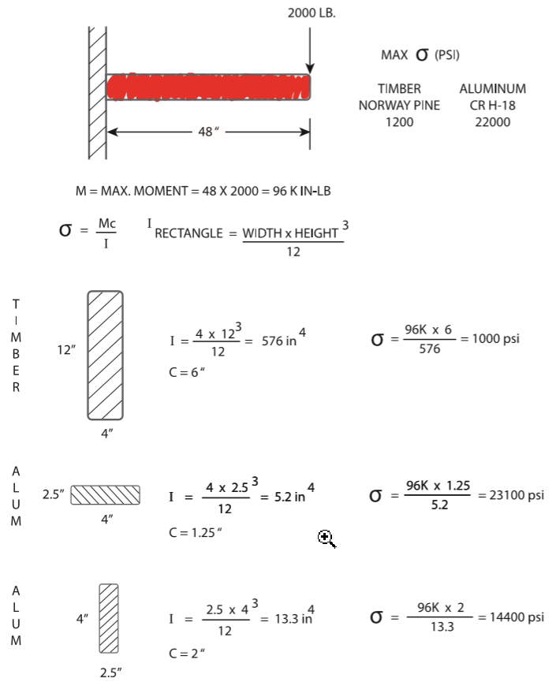
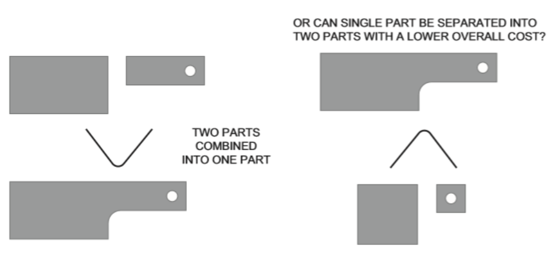
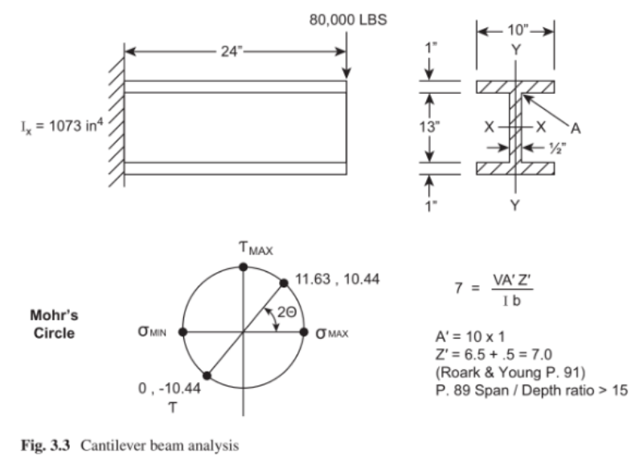
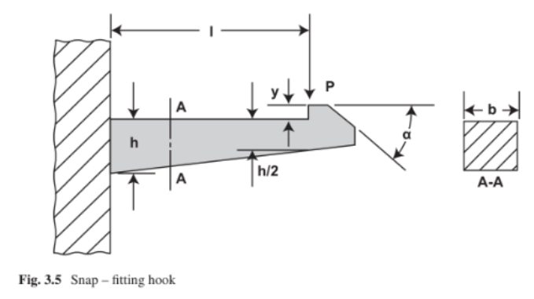

IndustrialAndEngineeringProductDesignCollaboration <<
Previous Next >> 紀錄
MechanicalDesignProcess
機械設計過程
Created by 40723133, 40723108, 40623143, 40723127&40723144
An electronic product enclosure is an item that surrounds and supports the circuit
board. The enclosure is what makes the device usable to the consumer. The enclosure is necessary for a number of reasons – to protect the electronics (the circuit board and LCD) from the environment or from a physical jolt (such as dropping the product).
電子產品外殼是包圍並支撐電路的物件。外殼能讓消費者使用這個產品。外殼
的樣子來自各種原因，但是最必要的是保護電子設備（電路板和LCD），防止電子設備板從環境或物理顛簸（例如掉落產品）損毀。
The enclosure provides access to input information to the device, via keys or buttons perhaps, and allows information to be transferred from the device. The enclosure provides structure so that the circuit board logic is supported and protected.
機盒可通過按鍵或按鈕訪問設備的輸入信息也許，並允許從設備傳輸信息。外殼提供結構，以便支持和保護電路板邏輯。
In essence, a successful design of an enclosure will be the one in which the design has conformed to the product’s written specification (spec) and has been done within the cost and time parameters that were set.
從本質上講，一種成功的外殼設計將是設計已符合產品的書面規格（spec），並且能在設定的成本和時間參數內完成。
1.1 Design Guide
1-1設計指南
Let’s break down some of the words of the above sentence for further definition
(with the word “successful” defined in its own subtopic).
讓我們分解上面句子中的一些詞以進一步定義何謂成功
Electronic Product Enclosure (EPE = Electronic Product Enclosure)
電子產品外殼（EPE =電子產品外殼）
these must be protected against the rigors of normal usage.
外殼也必須保護它們使它們正常運作。
The term “enclosure” (in this text) will be on the less complicated end of the spectrum, and the methodology explained can be extended into the more complicated design situations.
術語“enclosure”（在該文中）將處於較為簡單的範圍內，其方法是可以解釋到更複雜的設計情況。
The EPE Designer
EPE設計師
A good EPE Designer will have the following characteristics:
一個優秀的EPE設計師將具有以下特徵：
Ability to understand and conform to the product specification
理解並按照產品規格的能力
Be able to add to and help create the product specification
能夠添加或創建新的產品規格
Create inventive solutions to the problems presented by the product
為產品提出的問題創造新的解決方案
1.2 Defining the Overall Team
1-2定位整體團隊
Characteristics of the overall team are that the team can be:
團隊可以是由下列特徵定位；
Of a small or large size
團隊的規模
Located in one location or distributed worldwide
位於一個位置或分佈在不同區域
Limited in resources or have access to almost unlimited resources
資源有限或可以使用近乎無限的資源
In possession of the latest tools, or not
是否擁有最新工具
Motivated by a variety of reasons for accomplishing their goal
實現目標的動機
Varying in experience
是否擁有豐富的經驗
The entire engineering effort consists of an amalgam of design among several
disciplines. These disciplines include:
整個工程工作包括多個設計項目。
這些項目包括：
Electrical engineering
電機工程
Software and firmware engineering
軟件與固件工程
Mechanical engineering (including structural and thermal)
機械工程（包括結構學和熱學）
Industrial engineering
工業工程
System engineering
系統工程
The EPE Designer interacts with Marketing in the effort to define how the prod-
uct will function, how that functionality will present itself to the customer (user interface), and how the product will look to the customer (industrial design).
EPE設計人員與市場營銷部門需要進行互動，以定義產品如何運作，該功能如何向客戶展示（用戶界面）以及對客戶呈現的產品外觀（工業設計）。
Operations (Manufacturing) This organization is responsible for the complete flow
of materials for individual components and how those individual components get
fabricated, assembled, and delivered to the customer. If engineering’s responsibility
is to produce the product documentation, operations should be able to take that
documentation and get that product produced that meets the product specifications.
製造組(營運組)該組負責整個製造流程，以及如何獲得材料與製造這些組件，組裝並交付給客戶。工程組產出的文檔，操作人員應該要能夠照著文檔製造符合產品規格的產品。
Testing (Design Verification) This organization is responsible for testing both the
prototyping and mature designs. This can be accomplished by resources within the
mechanical design group (itself) or by an independent group setup for this particular
function.
測試組負責測試初始設計和最終設計。這部分可以直接通過機械設計組原有的的資源或為此設立特定測試功能的獨立組來完成。
The EPE Designer intersects with the test function by either conducting or reviewing test results. The testing done on the product is actually a part of the prod-uct requirements document (PRD) and that it must be proven that the product passes testing as defined in that document.
EPE設計師通過執行或查看測試結果來檢測功能。在產品上進行的測試實際上是產品需求文檔（PRD）的一部分，並且必須證明該產品通過了該文檔中定義的測試。
Quality Control/Quality Assurance This organization determines whether the acceptability limits of the individual parts (or entire assemblies) meet the standards both specified in the individual product specification (the drawing) and in the established overall corporate standards. Quality control would be concerned with tactical situations, while (corporate) quality assurance would be more concerned with strategic situations.
品保組確定單個零件是否在可接受最大公差，在單個產品規格（附圖）和已建立的總體公司標準中是否符合標準，品質控制是否與銷售戰術有關，而（公司）品質保證將與銷售戰術有關。
The EPE Designer intersects with this organization by specifying on their docu-
mentation the acceptability limits of each part and can go all up to include assem-
blies. Typically, acceptability limits take the form of:
EPE設計人員通過文檔指定的每個零件的可接受性限制來與該組互動，並且將所有零件包括在內。
通常可接受性限制採取以下形式：
1.Size (geometry) control as specified in drawing tolerances
2.Material and plating specifications stated on drawing
3.Cosmetic flaw rejection criteria stated on drawing
4.Functional specification as stated on the drawing
5.Determining the “critical” nature of some aspect of the part documentation.
圖紙指定的尺寸公差
圖紙上註明的材料和鍍層規格
圖紙上說明的外觀缺陷報廢標準
如圖所示的功能規格
確定零件文檔某些方面的“關鍵”性質
Service This organization is responsible for the repairing, warranty, and return of
product functions. They help determine course of action for field problems with the equipment.
服務組負責產品功能的維修，保修和退貨。它們有助於確任現場設備問題的解決方案。
Project Management This organization is responsible for tracking the project for:
項目管理組負責追蹤以下項目：
1.Time allocation – meeting deadlines that are committed
2.Resource allocation
3.Priority management (for a single project and relative to projects competing for the same resources)
4.Compliance to specifications for the product
5.Meeting cost goals
6.Reporting status of the project
時間分配–遵守約定的最後期限
資源分配
優先管理（針對單個項目以及與之競爭的項目相同的資源）
符合產品規格
達到目標成本
項目報告情況
Upper Management Included in this group is anyone who is responsible for the
project and has a need to understand the project. Project updates would be provided to this group at specific times during the project. Upper management would provide leadership and vision to the project.
高層管理組負責所有項目並需要了解該項目的所有人。
項目更新將在項目期間的特定時間提供給該小組。
高層管理人員將提供對項目的領導力和遠見。
1.3 Product Requirements
1-3產品需求
Determining success is a matter of meeting (or exceeding) the requirements of the
project.
成功是指能滿足或超過項目需求。
A project could be determined successful if it met its goals.
如果項目達到了目標，則可以確定為成功。
這些目標可以通過以下一份或多項書面文件解決。
Product Requirements Document (PRD) This document can go by a variety of
names . Basically, it is a “contract” of sorts that attempts to specify the basic functionality of the product. It can contain:
產品需求文檔（PRD）該文檔可以有多種形式 名稱。
基本上，“合約” 用來指定產品的基本功能。
它可以包含：
(a) A description of what the product will accomplish for the customer – it usually
does not specify exactly how the product will work. That is, details on “how to
get there, from here” are not explicit. This description uses words on the “final outside appearance” of the product . Again, the PRD forms an agreement between marketing and engineering as to what the product will be. The PRD can vary in its content detail. It is (should be) updated, during the course of the project, as elements get revised or added to. At each overall product review, it should be compared to the extent of how the design is conforming to the PRD.
(a)產品將為客戶完成的描述–通常不會確切說明產品的工作方式。也就是說，關於“如何從這裡到達那裡”的細節並不明確。
該描述使用的是產品“最終外觀”上的形容文字，而不是“內部工作原理”的細節。
同樣，RPD會在市場營銷和工程師之間達成協議，關於產品將是什麼。 PRD的內容詳細信息可能有所不同。
在項目過程中，隨著元素的修訂或更新，（應該）進行更新並添加。在每次整體產品審查時，都應該在設計與PRD的符合程度上進行比較。
A description of how the product will interface with the customer. This would
include:
(b)產品如何與客戶互動的說明。其中包括:
How information is displayed to the customer or how the information will
get from the customer, to the product.
如何向客戶顯示信息或如何從客戶向產品獲取信息。
Various interfaces to the product
產品的各種接口。
Labeling or icons intended to provide information to the customer.
用於向客戶提供信息的標籤或圖標
(c) A description of the various components of the product. That is, if the product
(the product being designed) needs additional equipment or cables to function
in a larger system, then a description of the various parts of the “system” will
need to be described. Thus, one will need to “draw a boundary” around exactly
what this product (being designed) is. What exactly is the “deliverable” to the
customer?
(c)產品各種組件的描述。也就是說，如果產品 （正在設計的產品）需要與其他設備連結才能在較大的系統中運行，則需要對“系統”的各個部分進行描述。因此，人們將需要圍繞著正在設計的產品的確切內容“劃界”。給客戶的“交付物”到底是什麼？
(d) Indication of the final aesthetic (visual appearance) of the product. Colors, tex-
tures, and industrial design are usually very well-specified.
(d)指示產品外觀部分的最終美學。顏色、紋理和工業設計通常都非常詳細。
(e) A listing of the environments that the product will both operate and be stored in.This includes temperature, shock, drop, vibration, humidity, water egress pro-
tection, shipping conditions, altitude, and specific corrosive atmospheres.
(e)產品將在其中運行和存儲的環境的清單，包括溫度，衝擊，跌落，振動，濕度，出水保護，運輸條件，海拔高度和特定的腐蝕性環境。
(f) A listing of any standards that the product will need to pass.
(f)產品需要通過的所有測試的清單。
Internal Test Reports These indicate positive test results. These are the results of
testing done to show that the requirements as set forth in the PRD have been passed.If the tests haven’t been passed, then there are action plans initiated to improve the product and conduct further testing.
內部測試報告這些表示測試結果的報告。這些是
進行測試以表明已通過PRD中規定的要求。如果未通過測試，則將啟動行動計劃以改,進產品並進行進一步測試。
Customer feedback is positive or negative. It is hoped that customers are gaining measurable
value from the product. Reasonable improvements to the product can be made when
this “real-world” feedback is available.
客戶反饋為正面或負面。希望客戶能衡量產品的價值。並且可以對產品進行合理的改.進建議此反饋是可行的。
Project Management Reports
項目管理報告
(a) On expenses (expected vs. actual). Monitoring of expenses can lead to an analysis of the true
“payback periods” of the project and better predictions on expenses for future
projects.
(a)支出（預期與實際）。
對支出的監控可以便於\對項目的真實“投資回報期”進行分析，並更好地預測未來項目的支出。
(b) Status on milestone dates (expected vs. actual):monitoring ofhow well the project achieved its time commitments leads to an indication ofthe true “payback period” of the project. Analyzing where milestones were notmet can lead to better predictions for future projects.
(b)里程碑日期的狀態（預期與實際的日期）：監視項目完成其時間承諾的程度會指示出項目的真正“投資回報期”。分析未達到里程碑的位置可以為將來的項目提供更好的預測
Ongoing analysis of “success” can be mea-
sured by:
可以通過以下方法來衡量“成功”的持續分析：
Any issues or problems with the product must be quickly
addressed so as to protect the company’s reputation in the industry. if customer satis-
faction reaches some set level of reliability, the product design team will have
achieved success.
必須迅速解決產品的任何問題或問題，以保護公司在行業中的聲譽。如果客戶滿意度達到一定的可靠性水平，產品設計團隊才算是成功。
Analysis of “Lessons Learned” From all disciplines on the project: There should be a way to gather feedback from everyone in the
product design process on what items would need to be improved. This will enhance
the success rate of future projects. More on this subject is presented in Chap. 13.從項目的所有學科中分析“經驗教訓”：應該要有一種方法可以收集產品設計過程中每個人有關需要改進哪些項目的反饋。這將提高未來項目的成功率。
Sales figures can indicate the success of the project – in
the sense that marketing has predicted the need for the product, engineering/opera-
tions has delivered that product to the customer, and the customer does
value that product. Or, in the opposite case, sales can be less than expected . such as:
銷售數字可以表明該項目的成功–從某種意義上說，市場營銷已經預測了對產品的需求，工程/運營已將產品交付給客戶，而客戶確實對產品進行了估價。在相反的情況下，銷售額可能會低於預期。例如：
Product's price too high/performancefeatures too low.
產品價格太高或是性能太低。
It took too long to get the product out into the market, and the customers now have better choices.
將產品投入市場花費的時間太長，客戶已經有了更好的選擇。
The product is too early into the market not enough “early adopters. This happens
when the technology of the product doesn’t match what customers (at the time)
value or other supporting technology isn’t available as yet
產品進入市場太早“參考者”不足。當產品的技術與當時（當時）客戶的價值觀不合或其他輔助技術不可用時。
Low reliability.
可靠性低。
All of the above reasons should be placed in the “competitive arena.” That is,
most products have competition in their markets. Customers will choose purchases
based on their needs for performance, price, and quality. New technology solutions
must compete against older solutions.
以上所有原因都應放在“競爭舞台”上。也就是說，大多數產品在其市場中都有競爭。客戶將根據對性能，價格和質量的需求選擇購買。新技術解決方案必須與舊解決方案競爭。
It would be rare to have all of the data available at product release to determine
how “successful” the product design effort is. Product design usually has increased
risk of success if:
產品發佈時很難獲得所有數據來確定產品設計工作的“成功”程度。
在以下情況下，產品設計通常會增加成功的風險：
Milestone completion dates are unreasonably shortened.
里程碑完成日期被不合理地縮短了。
The design has a high content of brand new components.
該設計包含大量的全新組件。
Changes (additions) to the project occur at an unmanageable rate.
對項目的更改（添加）以難以控制的速度發生。
The successful design has been simply described as：
成功的設計簡單描述為
1. Function to specification 功能規格
2. Delivery on time to project schedule 準時按計劃進度交付
3. Delivery at predicted costs 以預計的成本交貨
Of course, projects can exceed functionality, be delivered ahead of time, and
perhaps be even at a lower cost. This would be cause for celebration (although some
examination needs to go into why “actuals” didn’t match “predictable”).
當然，項目可能會超出功能，可能會提前交付，甚至成本更低。
這將是值得慶祝的原因（儘管需要進行一些檢查，以了解“實際情況”與“可預測因素”為何不匹配的原因）。
Behind the above “simple statements” for a successful design is however some
very large implications and that they are not so “simple.” Let me break down the
above three variables a bit. All three are interrelated on several levels.
然而，在上述“成功設計的簡單陳述”的背後有一些
影響很大，而且不是那麼“簡單”。讓我對以上三個變量進行一些分解。
這三個方面在幾個層面上相互關聯。
1.3.1 Function to Specification
1-3-1功能規格
Specifications take many forms. They can be written documents, notes from a meet-
ing, or even verbal instructions. The way that projects create specifications varies from company to company and indeed can vary within a company itself. Also, you,
the particular Designer, can come in at various stages in an overall project. Therefore,
there is no particular way that the work description can manifest itself to you, the
EPE Designer.
規格有多種形式。它們可以是書面文件，會議記錄，甚至是口頭指示。
項目創建規格的方式因公司而異，實際上在公司內部也可能有所不同。
還有你特定的設計師可以進入整個項目的各個階段。
因此，沒有任何一種特定的方式可以使工作描述向EPE設計師展示。
Although the EPE Designer is not ultimately responsible for setting the full prod-
uct requirements (in the specification), the designer’s input is critical. The EPEDesigner will be tasked with providing input as to just how far the limits of the
design can go. For example, if the Product Requirements “arbitrarily” determine
that the shock levels for the product are 40 g maximum, the EPE Designer must do
some research (or some initial testing) as to exactly what shock level is possible or
what levels have been achieved in the past. Therefore, the 40 g level is initially
“proposed,” and the EPE Designer must agree to that level or put forth arguments
for a different level. It may even be possible that higher g levels can be agreed to.
Similarly, if cost targets in the Specification seem overly aggressive, the EPE
Designers must do some “homework” on their portion of the budget that provides
reasonable data back to the project specification.
儘管EPE設計人員最終不負責設置完整的產品要求，但設計人員的輸入極為重要。
EPE設計人員將負責提供有關設計限制可以走多遠的信息。
例如，如果“產品要求”“任意”確定產品的衝擊等級最大為40 g，則EPE設計人員必須對可能的衝擊等級進行一些研究（或一些初始測試），或者 過去達到了什麼水平。
因此，最初是“建議”使用40 g級別的，EPE設計者必須同意該級別或提出論點為不同的水平。
甚至可能會同意更高的g含量。同樣，如果規範中的成本目標似乎過於激進，EPE設計者必須在其預算部分中做一些“功課”，以向項目規範提供合理的數據。
The important item to concern the EPE Designer is with the writing down of a
specification and the later agreement (formal or informal) among the various mem-
bers of the project. For example, let us say that the general task is one of designing
a removable Disk Drive Module. Here are some possible scenarios that lead to its
“successful design.”
EPE設計者需要關注的重要事項是寫下規格以及各成員之間的後來的協議。
例如，讓我們說一般的任務是設計可移動磁盤驅動器模塊之一。
這是導致其“成功設計”的一些可能情況。
Task (Example): Removable Disk Drive Module Scenario #1: Minimal Input
(to the Designer) – The Beginnings of a Specification
任務（示例）：可移動磁盤驅動器模塊方案1：最少的輸入–規範的開始
This would mean progressing with the design without much more than verbal
information (as given above). The designer would likely proceed to find out items
that would affect the design such as:
這將意味著在進行設計時只需要口頭信息即可（如上所述），設計師可能會繼續找出會影響設計的項目。
例如：
1. How many times is the drive to be removed? Will it be just for maintenance or is
it more like once a day to secure the data?
2. How large can the module be designed?
3. Is there an existing opening for the module (in the base unit)?
4. Is there a shock concern for the disk drive (what levels of shock)?
5. Will this module be used in other base units?
該驅動器要卸下多少次？它是要維護還是一天進行一次來保護數據？
可以設計多大的模塊。
模塊（在基本單元中）是否有現有的開口？
磁盤驅動器是否有電擊問題（電擊的等級如何）
該模塊是否可以在其他基本單元中使用？
This document (again, you are creating the specification) can now be
revised as often as necessary, each time with the agreement of those persons concerned
with the project (at this time). The document at this point does not have to be of any
great length. It can be as terse as necessary, for example, in the example of the disk
drive that we have started:
現在，每次在與項目有關的人員的同意下（此時），都可以根據需要對文檔（再次創建規範）進行必要的修訂。此時的文件不必像是其他任何文件 長度很長。例如，在我們啟動的磁盤驅動器示例中，它可以盡可能簡潔:
Project: Disk Drive Module
項目：磁盤驅動器模塊
Author: (the designer)
作者：（設計師）
Revision Level: 1 (date)
修訂級別：1（日期）
• Design requirements:
•設計要求：
1.Disk Drive Module will function under a shock load of 20 g.
2.Disk Drive Module will survive a shock load of 100 g (nonoperating).
3.Ambient air near the Disk Drive Module will be 30 °C maximum
(operating).
磁盤驅動器模塊將在20 g的衝擊負荷下運行。
磁盤驅動器模塊將承受100 g的衝擊負載（不工作）
在操作時磁盤驅動器模塊附近的周圍空氣最高溫度為30°C。
The above is just the start of the specification, but as more is known (specified),
the designer can proceed. The design can proceed because the designer now has
some idea when they have been successful, that is, if the design passes testing
designed to determine whether or not the design has passed the specification. In this
“Scenario,” minimal input, the specification will certainly be added to, and many
people involved with the project will need to review and approve the specification.
However, the designer can, at least, proceed to make some progress or show some
design options.
以上僅僅是本規範的開始，但正如已知的更多內容，設計人員可以繼續進行。之所以可以繼續進行設計，是因為設計者現在已經對成功有了一些想法，也就是說，設計是否通過了旨在確定設計是否通過規格的測試。在此“方案”中，只需最少的輸入，就肯定會添加規範，並且與該項目有關的許多人都需要審閱並批准該規範。 但是，設計者至少可以繼續取得一些進展或顯示一些設計選項。
• Scenario #2: A Complete Specification
•方案2：完整規範
This specification describes in detail all of the requirements of the mechanical
design. It would include:
本規範詳細描述了機械設計的所有要求，其中包括：
Product description
產品描述
Product financials
產品財務
Product scheduling
產品排程
It would include in its design requirements such needed detail as:
它將在其設計要求中包括以下所需的詳細信息：
Module to plug directly into a backplane for power and signal requirements
直接插入背板的模塊可滿足電源和信號要求
Module to slide on a nonmetallic surface for ease of entry/exit
可在非金屬表面上滑動的模塊，易於進入/退出
（加上一整套其他要求，包括環境，人因工程，電氣接口，機構認可，所需測試等）
• Scenario #3: A Working Specification
•方案3：工作規範
This specification is (by far) the most common specification that the designer is
adhering to. The specification’s completeness is somewhere between the “Complete”
and the “Nonexistent” (beginning) specifications (Scenarios 1 and 2). With the
working specification, the project manager usually has some idea of the design con-
straints, but all aspects have not fully been vetted out. The specification is now
under “change control,” that is, it is being updated fairly often in the beginning
phases of the project, and any changes or additions are being reviewed by the proj-
ect personnel with signature responsibility. As the project matures, major changes
are under extremely tight scrutiny as these changes can greatly affect project com-
pletion dates and milestones along the way.
該規範是（到目前為止）設計人員最常用的規範。
堅持。對於工作規範，項目經理通常對設計約束有一定的了解，但尚未全面審查所有方面。
該規範處於“變更控制”之下，在項目的開始階段就經常對其進行更新，並且任何變更或增補都由項目負責人簽名。
隨著項目的成熟，對主要更改進行嚴格的審查，因為這些更改會極大地影響項目的完成日期和里程碑。
1.3.2 Delivery on Time to Project Schedule
1-3-2準時按計劃進度交付
Various schedules are prepared during a project. Each (approved by the project
team) schedule is a “snapshot” of what the current project schedule is to be. The first
schedule of importance would be the schedule that is used to justify the project. This
schedule would be the one that is being used to be the “net present value” (NPV) of
the project. This NPV project schedule would include best estimates of:
在項目期間準備各種時間表。每個（由項目團隊批准的）進度表都是當前項目進度表的“快照”。首先 重要進度表將是用於證明項目合理性的進度表。該進度表將被用作項目的“淨現值”（NVP）。該NPV項目進度表將包括以下方面的最佳估計：
Person resources needed to finish the project (by a given date)
完成項目所需的人力資源（在交付日期之前）
Capital resources needed to finish the project (by a given date)
完成項目所需的資金（在交付日期之前）
Expected sales of product and at what price sold (if product sold by a given date)
產品的預期銷售額以及以什麼價格售出（如果在交付日期之前售出產品）
Expected cost of sales of product (if product sold by a given date)
產品的預期銷售成本（如果在給定日期之前銷售產品）
Thus, there is an expected “value” that the project has if that project is completed by its expected date which is the date that the schedule presently states.
因此，如果該項目在其預期日期（即進度表當前指出的日期）之前完成，則該項目具有預期的“價值”。
However, various considerations can change during the course of a project.
They can be:
但是，在項目過程中可能會改變各種注意事項，它們可能是:
Technical issue arises that changes implementation of original design.
出現了必須更改原始設計展現的技術問題。
Personnel working on project change (either particular members or the size of team).
負責項目變更了人員（特定成員或團隊規模）
Scope of project is revised (either increased or decreased).
修訂項目範圍（增加或減少）。
Revisions to costing of various project components as project proceeds.
隨著項目的進行，修訂各種項目組成部分的成本。
As each (above) consideration changes, the project team will meet to determine
its effect on the overall project schedule and see how it affects the NPV of the proj-
ect. A determination is made to either continue the project with the revised NPV or
discontinue the project. Usually, as the length of a project is extended, there would
be more expenses associated with that extension, and the NPV would be lowered.
隨著每個（以上）考慮因素的變化，項目團隊將開會確定其對整個項目進度的影響。
做出決定以修訂後的NPV繼續該項目或中止該項目。
通常，隨著項目時間的延長，與該擴展相關的費用會更多，並且淨現值會降低。
Getting back to determining “success” as “delivering on-time to project sched-
ule,” each project can analyze if they have indeed delivered that project “on-time to
project schedule” by dissecting the causes for any extension of the time schedule. If
the extensions are deemed “reasonable” and “justified,” then the project could be
considered to be a success in this regard.
每個項目都可以通過剖析任何延長時間進度表的原因來分析它們是否按時交付了該項目。
如果擴展被認為是“合理的”和“合理的”，則該項目在這方面可以被認為是成功的。
1.3.3 Delivery at Predicted Costs
1-3-3按預期成本交貨
Just as the schedule can change (in Sect. 1.3.2, above), the costs of either the prod-
uct or the costs needed to design and deliver that product can change. Costs can
change due to the following:
正如時間表可以更改一樣，設計和交付該產品所需的成本中的任一個產品的成本也可以更改。
成本可能會因以下原因而發生變化；
Personnel resources needed to finish the project are revised.
修改了完成項目所需的人力資源。
Capital resources needed to finish the project are revised.
修改了完成項目所需的資金。
Expected cost of sales of product are revised.
產品的預期銷售成本已修訂。
If the changes to the project costs are determined “reasonable and “justified,” then the
project could be considered successful from a cost standpoint.
如果確定項目成本的更改是“合理且合理的”，則從成本角度來看，該項目可以被認為是成功的。
Certainly, all three of the above factors (specification, time, and cost) need analy-
sis during and after the project.
當然，以上三個因素（規格，時間和成本）都需要在項目進行期間和之後進行分析。
1.4 Sketching Versus Detailing
1-4草圖與細節
An EPE Designer must know when to shift between either of these modes:
EPE設計人員必須知道何時在以下兩種模式之間切換：
Sketching or brainstorming: this is a very quick ideation phase. It is usually done
with a pencil. Nothing is detailed – it all seems to fit perfectly on these sketches. Scale isn’t really impor-tant; that will come a bit later. Feedback from others is attained. Speed is the main focus here; the designer is getting major choices on paper so that plusses and minuses of several choices can be decided。
•素描或集思廣益：
這是一個非常快速的構思階段。通常可以完成用鉛筆，並且沒有詳細說明，規模並不是很重要。
速度是這裡的重點。
Detailing: that is, providing “some amount” of detail. The amount of detail
needed is dependant on the criticality or the uniqueness of the situation. In the
sketch (phase), everything works, you have “glossed over” the items that may be
stumbling blocks. You have done that to speed the overall design process, but
now in the detail mode, more critical analysis is needed. While in “detail mode,”
you work out (more) exactly some critical parts of the design, the parts that a
designer recognizes as “deal breakers.” Details usually need CAD design to pro-
vide real geometry and scale to the situation. Again, design reviews can be criti-
cal to continue quickly down agreed-to design paths.
詳圖：即提供一定訊息量的詳圖。所需的詳細信息量取決於情況的嚴重性或獨特性。
草圖（階段），看似一切正常，但事實上“忽略了”有可能發生錯誤。您這樣做是為了加快整個設計過程，但是
現在，在詳細信息模式下，需要進行更嚴格的分析。
在“詳細模式”下，可以準確地設計出設計中的一些關鍵部分，即設計師認為是“交易突破者”的部分。
細節通常需要CAD設計才能提供真實的幾何圖形並根據情況進行縮放。
同樣，設計審查可能至關重要，可以迅速沿著同意的設計道路繼續前進。
1.5 Design Reviews
1-5設計評論
Some General Comments About Design Reviews:
關於設計評論的一些一般性評論
1. Take attendance, and note who is at the meeting.
1.參加會議，並註意參加會議的人。
2. Take (at least, cursorily) notes on all of the (relevant) issues that are raised.
2.記下提出的所有（相關）問題。
3. Possibly invite someone to the design review, who is not familiar with the basic
design. They could be someone from a different function or department within
the company. Sometimes, this person can add a different “take” on the issues as
they are viewing them from a different perspective.
3.邀請不熟悉基本設計的人參加設計審查。有時，這些人可以在問題上提供不同的“觀點”。
4. Briefly review the main goals of the design.
4.簡要回顧設計的主要目標。
5. Some ideas brought up will already have been thought out by the designer; that’s
fine, and just go quickly thru your rationale.
5.設計師已經考慮了提出的一些想法，請按照自己的理論繼續進行。
6. Some ideas may seem (initially) to be not valuable or not “on point.” Just note
them and move on; it’s possible that you may see the value at a later time.
6.有些想法似乎沒有價值或不切實際。只是注意到他們繼續進行；以後可能會看到該值。
7. You will get the value out of the design review – it always happens if you are
“open” to it. Thank all of those involved as they have given you their insight and
experience.
7.你將從設計評審中獲得價值–如果你對評論是開放性的，它就會永遠發生。
感謝所有相關人員，因為他們為您提供了見識和經驗。
8.Publish your notes on the meeting to those that were in attendance and to the
entire project team. This will log further action to be taken by you and others to
make progress with the design. Ask for further comments from your Design
Review Team.
8.將您在會議上的筆記發布給與會人員和整個項目團隊。這將記錄您和其他人要採取的進一步行動，
在設計上取得進展。要求您的設計審查團隊提供進一步的意見。
1.6 Communication
1-6溝通
Communication is a necessity for a design to be successful. That sentence stands by
itself but is worthy of a more full discussion.
溝通是設計成功的必要條件。該句話本身是正確的，但值得進行更充分的討論。
1.6.1 Purpose of Communication
1-6-1溝通目的
The purpose of communication is to convey information about the design. This is
required as that information supplies answers to questions, documents the design as
it presently exists and documents the evolution of the design. Communication can
be written, filmed, or verbal. Written documentation takes the form of:
交流的目的是傳達有關設計的信息。之所以需要這樣做，是因為信息可以提供問題的答案，記錄當前存在的設計以及記錄設計的演變。交流可以書面，影片或口頭形式進行。書面文件的形式為：
Specifications
技術指標
Drawings
圖紙
Project meeting notes/schedules
項目會議記錄/時間表
Notes in notebooks
筆記本中的筆記
Emails specific to a project or program (any digital communication)
特定於項目或程序的電子郵件（任何數字通信）
Film documentation are camera recordings of project proceedings, tests, and
events. Verbal communications are any of the words spoken to move the project into
a completed state. All important verbal communication needs to be put into written
form so that all members of the project can review those communications.
影片文檔是項目過程，測試和事件的攝像機記錄。口頭交流是使項目進入完成狀態的任何語言。
所有重要的口頭交流都必須以書面形式進行表格，以便所有成員都可以查看這些通訊。
1.6.2 Value of Communication
1-6-2溝通的價值
Great communication will make a project more successful. Great communication
has the following attributes:
良好的溝通將使項目更加成功。良好的溝通具有以下特性:
Accurate – the information is true and backed by testing/documentation.
準確–信息真實，並有測試/文檔證實
Concise – the information is straight to the point without excessive words.
簡潔–信息直截了當，沒有過多的措辭。
Distributed – to all those that need the information.
分佈式–面向所有需要信息的人。
Speedy – the information is quickly disseminated.
快速-信息迅速傳播
Offers solutions – proposing a solution to problems invigorates the solution
process.
提供解決方案–針對問題提出解決方案，可以加快解決過程。
1.6.3 Links in the Communication Chain
1-6-3通訊的連結
One of the goals of communication is to get that information to the people who need the information. Email distributions are easy to create along with document control distribu-
tions. The EPE Designer should decide among all of the people involved on theproject team, who is critical to making the decisions that need to be made and who is copied for status purposes only.
交流的目標之一是將信息傳遞給需要的人信息。
電子郵件分發和文檔控制分發很容易創建。
EPE設計師應該在項目團隊的所有相關人員之間做出決定。
1.7 Engineering Economy
1-7工程經濟
“What something costs” is a paramount consideration in just about any endeavor. In many product designs, it will be one of the main causes of product success or failure. specification, but for now, let’s begin the discussion stating that the EPE Designer must be capable of coming up with cost information and some break-even analyses. it is stated that “If an engi-neering project is to succeed in meeting human needs, it must be designed and oper- ated in a way that promises both physical and economic feasibility.”As cost is so important, the designer needs to:
“花什麼錢”是至關重要的幾乎所有努力都需要考慮。在許多產品設計中，它將成為產品成功或失敗的主要原因之一。但是現在，讓我們開始討論，指出EPE設計人員必須能夠提供成本信息和一些收支平衡分析。“如果一個工程項目要成功滿足人類的需求，就必須以保證物理和經濟可行性的方式設計和運行該項目。”由於成本如此重要，因此設計者需要：
1.Be aware of what the cost goals (for both the individual part and the completeassembly) are for the design.
1.注意設計的成本目標（對於單個零件還是整個組件）。
2.Be aware of what the material and process options are for the part being designed.
2.注意所設計零件的材料和加工選擇
3.Propose solutions to materials and processes that are appropriate to where the prod-
uct is in its overall life cycle.
3.為適合產品整個生命週期的材料和過程提出解決方案。
4.Provide cost information, based on the appropriate quantities being ordered,
back to the project team so that this important metric is always well-known.
4.根據訂購的適當數量將成本信息提供給項目團隊，以使這一重要指標是眾所皆知的
Let’s get into an example. As shown in Chap. 4, the choice on whether to “tool”
a part is mentioned. This type of problem can be analyzed by choosing between:
(200 parts per month needed in each case)
讓我們來看一個例子。如第一章所示。
在圖4中，提到了是否“工具化”零件的選擇。
可以通過以下方式分析這種類型的問題：（每種情況下每月需要200個零件)
Choice A: un-tooled part cost is 5.00fromVendorA選擇A：供應商A的非工具零件成本為5.00美元ChoiceB:designatooledpartandhaveVendorTmakethetool.Estimateofcosts:tooledpartcostis1.00andtoolingcostis1.00andtoolingcostis4000.00選擇B：設計工具零件，並讓供應商T製作工具。成本估算：加工零件成本為 1.00，加工工具成本為$ 4000.00
At what time period will the tooling cost and new part cost be equal to the old
part cost? This is what is known as the “break-even point.”
Answer: this is easily calculated or graphed (see Fig. 1.1):
在什麼時候模具成本和新零件成本將等於舊的部分成本？
這就是所謂的“收支平衡點”。
答案：這很容易計算或繪製（見圖1.1）：
ChoiceB =×()1//part200partsmonthm×5onth=×()1//part200partsmonthm×5onth + = 4000 $5000
After 5 months, the total cost will be less for Choice B, the tooled part. Clearly, if
the product is produced for 5 months or more, we would choose to tool the part.
5個月後，選擇B的總成本將減少。
顯然，如果產品生產了5個月或更長時間，我們將選擇 B選項。
However, the above “economic reality” actually has some complications.
Choice B costs (above) did not include:
但是，上述“經濟現實”實際上有一些複雜性。上述選擇B的成本不包括：
1. The cost to design and document the tooled part.
1.設計和記錄工具零件的成本
2. The cost of bidding the tool and deciding that Vendor T was the best tool
vendor.
2.競標工具並確定供應商T是最佳工具供應商的成本。
3. The cost of prototyping the tooled part (before approving the drawing of tooled
part).
3.製作工具零件的原型成本
4. The cost of getting a first article of the tooled part approved (we’ll assume here
that the initial first article is approved – hopefully, no tool modification is required
as this would be an additional cost).
4.批准工具零件的第一篇文章的費用（我們在此假設第一篇文章已獲得批准-希望不需要修改工具，因為這將是額外的費用）
5. The cost of testing the tooled part (as a replacement for the un-tooled part).
5.測試工具零件的成本
6. The cost of “using up” the un-tooled part and switching over to the tooled part.
6.“用完”未使用工具的零件並切換到使用工具的零件的成本。
7. The cost of the money for the tooling. That is, the 4000costofthetoolingisactuallyworthmorethan4000. Let me explain.
7.模具費用。也就是說，工具的成本為4000實際價值超過 4000。以下進行解釋。
If the 4000wasnotgoingtobegiventothetoolmakervendor,itwouldbeanearninginterestforthecorporation.A“simpleinterest”calculationwouldhavetheinterestearnedon4000 be (at 2%/year): 4000×0.02/12months×5months(thebreak−eventime)=33. But, the question here may be:
如果不將4000美元提供給工具製造商，則對公司而言將是賺錢的興趣。
“簡單利息”計算將獲得4000美元的利息（按2％/年計算）：4000美元×0.02 / 12個月×5個月（即收支平衡時間）= 33美元。
但是，這裡的問題可能是：
What could the corporation do with the 4000thatwouldbebetterthanjustcreatingthe33 simple interest? Perhaps they could invest it into the development
of a new product that could generate much more money or spend it on another tool
on a different project that would bring in more money. Yes, this isn’t simple.
公司可以用$4000做什麼呢？
創造33美元的單利嗎？也許他們可以將其投資到開發項目中，可能產生更多收益或將其花費在其他工具上的新產品
在另一個可以帶來更多收益的項目上。這並不簡單。
In the seven items above, the cost to design and document the tooled part is not
a trivial amount of money. If it takes 1 week to design, document, and prototype, the
tooled part could cost the corporation 1000forthedesigner′stime(say,at1000/
week salary).
在上面的七個項目中，設計和記錄工具零件的成本不是微不足道的錢。如果需要花一周的時間來設計，記錄和原型，則
工具零件可能會使公司在設計者的時間中花費1000美元（例如，1000美元/週工資）。
Most corporations will not “factor in” the above seven items in their “break-
even” analysis, but it is worthy of consideration in some circumstances.
大多數公司在“盈虧平衡”分析中不會“考慮”上述七個項目，但是在某些情況下值得考慮。
Another term that a designer will need to be familiar with is “return on invest-
ment” or abbreviated as ROI. This is similar to the “break-even point” as stated
earlier, but that the question is posed slightly differently. In the same problem as
above (Choices A and B), the question would be posed as:
設計師需要熟悉的另一個術語是“投資回報率”或簡稱為ROI。這類似於前面所述的“收支平衡點”，但提出的問題略有不同。
在同樣的問題以上（選擇A和B），問題將提出為：
What is the ROI on a 4000tooltobringdownthepiecepriceofa5 part? Once
the new tooled piece price is known (1)andthenumbersareordered(say,permonth=200parts/month),thentheROI=5months.So,basicallythereturnoninvestmentof4000 will be 5 months.
4000美元的工具降低5美元零件的單價的投資回報率是多少？
已知新的加工件價格（1）並訂購了數量（例如，每月=200個零件/月），則ROI=5個月。因此，基本上 4000的投資回報為5個月。
7.0.0.1:9443/Chapter 2 Building the Design
第2章構建設計
2.1 Beginning Point
2.1起點
Designers are tasked with either continuing work on existing designs or starting a brand new design.
設計師的任務是繼續進行現有設計或開始設計。全新的設計。
• Brand new design: they would basically have no constraints, other than complying with the specification.
•全新的設計：除了遵守規範外，它們基本上沒有任何限制。
• Continuation (or adding to) an existing design: Only a small part of an existing design is to be modified.
•延續（或增加）但僅對現有設計的一小部分進行修改。
• Major modification of an existing design:In this case a large part of the original design is to be modified.
•現有設計的重大修改：在這種情況下，原始設計的很大一部分將被修改。
So, it’s important to know where the present design effort will fit into what has been previously done. Our “basic layout” can proceed either with or without the constraints of previous work.
因此，重要的是要知道當前的設計工作將在哪裡適應以前已經完成。我們的“基本佈局”可以進行或不進行先前工作的限制。
2.2 Defining the Design Boundary: System Description
2.2定義設計邊界：系統說明
Designs can be extremely complex and large , smaller systemsThis is important for a variety of reasons, a few of which are:
設計可能非常極端複雜而大型，較小的系統。這對於原因多種多樣，其中包括：
• Focus on the personal responsibility
•關注個人責任
• Awareness of other equipment that must interface to this design
•了解必須與該設計交互的其他設備
<<<<<<< HEAD
• Overall “system” functionality (not just the function of the subsystem)
•整體的“系統”功能（不僅僅是子系統的功能）
Even something as “small” as a cell phone functions as part of a larger system. That is, the box that the consumer purchases can contain:
甚至像手機這樣“小”的東西也可以作為大系統的一部分。即，消費者購買的盒子可以包含：
• Cell phone
• 手機
• Battery charger
• 充電器
• Cables
•電纜
• Sim card
•SIM卡
• Instruction manual
•使用說明書
• Other shipping materials (labels, bags, bubble wrap)
•其他運輸材料（標籤，袋子，氣泡包裝）
(We’ll limit the discussion of the “system” here, as one can even think of a larger system that would include the cell phone towers and satellite systems.)
（我們將在這裡限制對“系統”的討論，因為人們甚至可以想到更大的範圍。系統，其中包括手機信號塔和衛星系統。）
We start here at system description because most electronic enclosures surround and support a product. Sometimes, one product can be thought of as part of a larger product. For example, a network adapter card (a product itself) can be placed into a microcomputer (a second product) and form an entirely new product, in this example, a networkable microcomputer. Things get even more complicated as the networkable microcomputer itself forms a part of the network which may be an even larger product.
我們從系統描述開始，因為大多數電子機箱都圍繞著支持產品。有時，可以將一種產品視為較大產品的一部分。例如，可以將網絡適配器卡（產品本身）放入微型計算機（第二產品）中，並形成一個全新的產品，在此示例中為可聯網的微型計算機。隨著網絡的發展，事情變得更加複雜微型計算機本身構成了網絡的一部分，它可能是更大的產品。
Looking at things in another way, we may be tasked to design just a subsystem of a much larger system. Thus, our “system” may be not even a product but just part of a larger “system” that has been broken down into (time) manageable pieces. For example, we could be tasked to design a data recorder as part of a (larger) surveying system. This system is shown in Fig. 2.1. This system consists of (at least) three major subsystems:
用另一種方式看待事物，我們可能只被設計為更大系統的子系統。因此，我們的“系統”甚至可能不是產品，而只是更大的“系統”的一部分，該系統已被分解為（時間）可管理的部分。例如，我們的任務是設計一個數據記錄器，作為（更大）測量系統的一部分。該系統如圖2.1所示。該系統至少包括三個主要子系統：

• Overall “system” functionality
•整體的“系統”功能
Sometimes, one product can be thought of as part of a larger product can be placed into a microcomputer and form an entirely new product, in this example, a networkable microcomputer.
有時，可以將一種產品視為較大產品的一部分，並形成一個全新的產品，在此示例中為可聯網的微型計算機。
we may be tasked to design just a subsystem of a much larger system. Thus, our “system” may be not even a product but just part of a larger “system” that has been broken down into manageable pieces.
我們可能只被設計為更大系統的子系統。因此，我們的“系統”甚至可能不是產品，而只是更大的“系統”的一部分，該系統已被分解為可管理的部分。
description
描述
• Data recorder
•數據記錄儀
• Data recorder mounting bracket
•數據記錄儀安裝支架
• Survey pole (labeled “pole”), which includes another subsystem, the data recorder bracket
•調查極（標記為“極”），其中包括另一個子系統，數據錄音機支架
There would actually be even more individual portions of this “system”.As a side note, the system shown in Fig. 2.1 is a photograph of a Trimble Survey system appearing in the Smithsonian Museum in Washington, D.C.
實際上，該“系統”中甚至會有更多的獨立部分。作為附帶說明，圖2.1中所示的系統是
We have become a team member of the “surveyor system design group” and will be designing a portion of overall design.
我們已成為“測量員系統設計小組”的團隊成員，並將設計總體設計的一部分。
Therefore, the first task for us is to determine what exactly we are to design. To accomplish this task, we will need a specification.
因此，我們的首要任務是確定我們到底要設計什麼。要完成此任務，我們將需要一個規範。
2.3 The Design Process
2.3設計過程
2.3.1 Overall Project Start to Project Finish
2.3.1總體項目開始到項目完成
Designs can proceed in any number of ways. it is the end result that is a measure of success. A design usually proceeds as:
設計可以以多種方式進行。最終結果是衡量成功的標準。設計通常按以下步驟進行：
The EPE Designer will have a “lion’s share” of the responsibility of the following tasks.
EPE設計人員將承擔以下任務的“絕大部分”。他們將是許多工作的“執行者”和“推動者”。
1.Sketch of idea – this is the “ideation” stage of the project. Words must be turned into a picture representation of those words. Once the idea takes some form, it can easily be reviewed and revised.
1.構思草圖–這是項目的“理想”階段。話必須轉變成這些單詞的圖片表示。想法採用某種形式後，可以輕鬆地進行審查和修訂。
2. Review of idea and authorization to proceed to prototype – this action takes the “picture of the idea” and turns it into something the team can actually touch. The “authorization to proceed” is important in that projects that are usually limited in time and money, so these expenditures must be agreed to by the team.
2.審查構思和授權以進行原型製作-此操作將“想法的圖片”，並將其轉變為團隊可以實際觸及的東西。現在可以以某種方式拿起。 “授權進行”在以下項目中很重要通常時間和金錢有限，因此這些支出必須由以下各方同意團隊。
3. Drawing of idea for prototype fabrication – usually, a sketch is turned into a digitized drawing file that allows the design to be fabricated. Italics are included to show “revision level” of the formal documentation
3.繪製原型製造的想法–通常，草圖是轉換成數字化的圖形文件，從而可以製作設計。
4. Prototype fabrication– the project team will determine the cost and time constraints of producing the prototype.
4.原型製造–項目團隊將確定成本和生產原型的時間限制
5. Prototype analysis and testing – once the prototype is received by the team, it is tested to see how the prototype conforms to the specification. The project team determines just exactly what testing needs to be done to make the decision on how to proceed after that testing.
5.原型分析和測試–一旦團隊收到原型，就可以測試以查看原型如何符合規範。項目團隊確定恰好需要進行哪些測試才能做出決定測試後如何進行。
6. Review of prototype and test result – test results are reviewed by the team, and revisions are proposed.
6.審查原型和測試結果–測試結果由團隊審查，並且提出了修訂。
7. Change to improve prototype– this is the start of an iterative process which will finally result in the design conforming to the product specification.
7.進行更改以改善原型–這是迭代過程，最終將使設計符合產品規格。
8. Further analysis and testing of Revision 2
8.修訂2的進一步分析和測試
9. Final documentation produced/final testing/final review
9.最終文件製作/最終測試/最終審查
10. Formal approval of design for Production Release
10.正式批准生產發布的設計
Note that “Production Release” in the above process allows the production of “some number” of units to be produced for sale to a customer or to serve as a larger number of units for a more expansive test program. Corporations can differ in a number of ways on their procedure for releasing and testing their products for their customers. Also note that most projects would have many more revisions than the two revisions shown, but the project generally proceeds as shown.
請注意，上述過程中的“生產下達”允許生產“一定數量”的單元將被生產以出售給客戶或作為更大的單元用於更廣泛的測試程序的單元數。公司可以在他們發布和測試其產品的程序的方式顧客。另請注意，大多數項目的修訂版本會比請注意，上述過程中的“生產下達”允許生產“一定數量”的單元以生產以出售給客戶，或用作更多單元以用於更廣泛的測試程序。公司在為客戶發布和測試產品的過程上可以有多種方式的差異。另請注意，大多數項目的修訂版將比所示的兩個修訂版多得多，但是該項目通常會如所示進行。
2.3.2 EPE Designer’s Starting Considerations
2.3.2 EPE設計者的開始注意事項
There is no “absolutely correct” way to proceed with a design for the EPE Designer.
沒有任何“絕對正確”的方式可以進行EPE設計器的設計。
1.Determine the use and requirements of the solution not directly related to load. Some of the more important of these requirements are:
1.確定與負載不直接相關的解決方案的用途和要求。其中一些更重要的要求是：
(a) Environment – where will the product be used? ltitude/on vehicles.
（a）環境–產品將在哪裡使用？
(b) Temperature – what are the temperature extremes of the environment?
（b）溫度–環境的極端溫度是多少？
(c) Expected life – one usage, years of warranty, service?
（c）預期壽命–一次使用，多年保修，服務？
(d) Cost requirements – always an important consideration. Will definitely depend on number of units being produced and tooling budget.
（d）成本要求–始終是重要的考慮因素。絕對將取決於生產的單元數量和工裝預算。
(e) Finish requirements – cosmetic details can greatly affect cost.
（e）加工要求–外觀細節可能會大大影響成本。
(f) Size and weight limitations – what are the bounds of the present solutions in the industry? Affects materials/fabrication techniques chosen by designer.
（f）尺寸和重量限制–當前行業解決方案的局限性是什麼？影響設計師選擇的材料/製造技術。
(g) Safety and regulation requirements – what are the effects of product failure?
（g）安全和法規要求–產品故障的影響是什麼？
All of the above are very important considerations to be considered at the very beginning of the EPE Designer’s design. .A different design results from a design expected to last “one time” vs. a design that needs to work after 1000 uses. A different design results from a design
以上所有這些都是EPE設計師在設計之初就要考慮的非常重要的考慮因素。與預期使用“一次”的設計相比，需要經過1000次使用後才能工作的設計產生了不同的設計。
2. Determine or estimate the working load from all the various possible types of loads that the individual member may be required to withstand. It is necessary to consider all likely combinations of loads and, if possible, to determine the relationship between load and time. Some of the possible load types are:
2.根據可能需要單個構件承受的所有各種可能類型的載荷來確定或估算工作載荷。有必要考慮所有可能的載荷組合，並在可能的情況下確定載荷與時間之間的關係。一些可能的負載類型是：
(a) Static
（a）靜態
(b) Steady-state dynamic (vibration)
（b）穩態動態（振動）
(c) Transient dynamic
（c）瞬態動態
(d) Impact or shock
（d）撞擊或衝擊
(e) Body contact, such as point loading or friction
（e）身體接觸，例如點負荷或摩擦
(f) Other loading, such as thermal/gravity/acoustical
（f）其他載荷，例如熱/重力/聲
The above load determinations are also very important considerations for the EPE Designer’s design. If those loads are changing over time, this will result in a different design solution. Determining the magnitudes and types of loads will directly determine the materials and cross-sectional shapes that are needed to support the electrical components.
上述負載確定對於EPE設計人員的設計也是非常重要的考慮因素。如果這些負載隨時間變化，這將導致不同的設計解決方案。確定負載的大小和類型將直接確定支撐電氣組件所需的材料和橫截面形狀。
3. Determine what the failure mechanism will be. Deformations occur due to loads being axial, shearing, bending, or torsional. Possible failure modes are:
3.確定故障機制將是什麼。變形是由於軸向，剪切，彎曲或扭轉載荷而發生的。可能的故障模式為：
(a) General yielding (overall inelastic behavior)
（a）總體屈服（總體無彈性行為）
(b) Rupture or fracture
（b）破裂或斷裂
(c) Sudden – caused by static or dynamic load on brittle material
（c）突然–由脆性材料上的靜態或動態載荷引起
(d) Slow – caused by static load on ductile material
（d）慢–由延性材料上的靜載荷引起
(e) Progressive – caused by repeated load (fatigue)
（e）漸進式–由反復加載（疲勞）引起
(f) Excessive deformation
（f）過度變形
(g) Buckling
（f）過度變形
(h) Creep – deformation under constant stress
（h）蠕變–恆定應力下的變形
(i) Relaxation – changing stress under constant strain
（i）鬆弛–在恆定應變下改變應力
(j) Abrasion (wear)
（j）磨損（磨損）
(k) Corrosion
（k）腐蝕
By the EPE Designer determining how their design will fail, it will be possible to revise that design to protect against that failure. Testing will also reveal some failure mechanisms. However, if some of these failure mechanisms can be thought of before testing, much savings of development cost can be saved.
通過EPE設計人員確定他們的設計將如何失敗，可以修改該設計以防止失敗。測試還將揭示一些故障機制。但是，如果可以在測試之前考慮其中一些故障機制，則可以節省很多開發成本。
In summary of the above three items, by determining the use cases, loading, and potential failure mechanisms of the design, the EPE Designer can proceed with the design with a solid base of understanding.
總結以上三項，通過確定設計的用例，負載和潛在的故障機制，EPE設計人員可以在紮實的基礎上進行設計。
2.4 Optimal Object Placement
2.4最佳對象放置
Most designs can be thought of as the physical placement of objects in space. The individual objects are the separate parts of the overall assembly. Some of the individual parts are completely known . Besides the “known” parts, other parts need to be completely designed new. These new parts can be produced in-house or completely specified to be produced by another company .
可以將大多數設計視為物體在空間中的物理放置。各個對像是整個組件的獨立部分。其中一些零件是完全已知的。除了“已知”零件外，其他零件也需要全新設計。這些新零件可以在內部生產，也可以完全指定由其他公司生產。
Electronic packaging design consists primarily of arranging subsystems into their most efficient arrangement.indeed be required to shrink to fit within this given overall size.
電子包裝設計主要包括將子系統安排為最有效的安排。需要子系統縮小以適應給定的整體大小。
This shows an object at some distance from an enclosure. I’d like to start my discussion on the design for an electronic enclosure with a description of several design “scenarios.” Much of the discussion is for a 2D situation, but this is easily extended to include 3D, and I’ll show some examples of that 3rd view:
這顯示了一個物體與外殼相距一定距離。我想開始討論電子外殼的設計，並介紹幾種設計“方案”。大部分討論是針對2D情況，但是很容易擴展為包括3D，我將展示該3d視圖的一些示例：
Basic Object/Wall clearance: Fig. 2.2 shows an Object and a Wall. The “Object” could be considered just about anything.tem being designed. In just about every design, the designer has to determine the distance between the “Object” and the “Wall.” The idea here could be extended to determining the distance between Object 1 and Object 2. None of these determined clearances need to be the same as each other. The clearance in the X-Direction can be different than the clearance in the Y-Direction, which again can be different than the clearance in the Z-Direction.
基本物體/牆壁間隙：圖2.2顯示了物體和牆壁。 “對象”幾乎可以視為任何事物。 “牆壁”可以視為外殼的外表面或要設計的物品的外部。在幾乎每個設計中，設計人員都必須確定“對象”與“牆”之間的距離。這裡的想法可以擴展到確定對象1和對象2之間的距離。這些確定的間隙都不需要彼此相同。 X方向上的間隙可以不同於Y方向上的間隙，Y方向上的間隙也可以與Z方向上的間隙不同。

2.4.1 Clearance Distance Is a Function Of
2.4.1間隙距離是
1.Tolerances of the object and wall: If one were to maintain a particular distance , and a nominal overalldimension, then the design must allow for:
1.物體和牆壁的公差：如果要保持特定的距離和標稱的整體尺寸，則設計必須考慮以下因素：
• The thickest wall at its extreme of tolerance
•極限公差時最厚的牆
• The largest possible objectNote that the 0.100 inch nominal clearance distance has been reduced by both the thickest wall and the largest object.
•可能的最大物體請注意，最厚的壁和最大的物體都減小了0.100英寸的標稱間隙距離。
• Wall thickness could be thicker by 0.005 inch.
•壁厚可能要厚0.005英寸。
• The object itself (mounting hole to object edge) could be at a maximum locational tolerance; this could be 0.010 inch.
•物體本身（將孔安裝到物體邊緣）可能處於最大位置公差；這可能是0.010英寸
• The mounting boss in the box could be closer to the wall due to its positional tolerance; this could be 0.005 inch.
•由於其位置公差，盒子中的安裝凸台可能更靠近牆壁。這可能是0.005英寸。
• The mounting hole could be 0.010 inch larger than the fastener diameter, allowing for 0.005 inch additional movement.
•安裝孔可能比緊固件直徑大0.010英寸，從而允許額外移動0.005英寸。
All of the above (4) tolerances add to 0.005 + 0.010 + 0.005 + 0.005 which would total to 0.025 inch.
以上所有（4）公差都加到0.005 + 0.010 + 0.005 + 0.005，總計為0.025英寸。
Footnote:Some designers would make a case for some statistical probability, that all (4) tolerances would go in one direction, and we would not have a total of 0.025 inch. Some conservative designers would assume that all tolerance will go in the “wrong” direction, and thus design is a “worst case.” I’ll generally disregard the “statistical” approach to tolerances for now, but it could be valuable in design situations where space is extremely constrained.
腳註：一些設計師會提出某種統計概率，證明所有（4）公差都將在一個方向上進行，而我們不會總共有0.025英寸。一些保守的設計師會假設所有公差都將在“錯誤的”方向上進行，因此設計是“最壞的情況”。我現在通常不會理會公差的“統計”方法，但在空間非常受限的設計情況下，它可能會很有價值。
• Tolerancing using sum of squares
•使用平方和進行公差
• Tolerancing using Monte Carlo simulation
•使用蒙特卡洛模擬進行公差
2. Movement of the Object relative to the Wall: This is also known as “sway” clearance, that is, the object may vibrate in operation while the wall could be steadfast.
2.物體相對於牆壁的運動：這也稱為“搖擺”間隙，即，物體在運行時可能會振動，而牆壁可能會保持牢固。
3. Growth of the Objects: This could be the result of thermal expansion.
3.物體的生長：這可能是熱膨脹的結果。
4. Overall size constraints: Internal clearance distance will be affected by the overall size. That is, with a given overall size, the distance between objects will have some particular limit. The distance between objects will be a function on the size tolerances of the objects and the tolerances on the Object locations. If the overall size is not constrained , Object size and clearances between Objects will determine the overall size.
4.總體尺寸限制：內部遊隙距離將受到總體尺寸的影響。也就是說，對於給定的整體大小，對象之間的距離將有一些特定的限制。對象之間的距離將取決於對象的尺寸公差和對象位置的公差。如果總體大小不受限制，則對像大小和對象之間的間隙將確定總體大小。
2.4.2 Object Arrangement
2.4.2對象排列
The designer usually works to minimize the overall dimensions of the enclosure by a “productive” arrangement of all of the Objects needed to fit within the enclosure. This can be done in two dimensionsand the 3rd dimension, Z. Other arrangements of Objects look to fulfill assembly, servicing, aesthetic, or user interface needs.
設計人員通常會通過“生產”排列所有適合安裝在外殼中的物體的方式來最大程度地減小外殼的整體尺寸。這可以在兩個維度以及第三個維度Z中進行。對象的其他佈置旨在滿足組裝，維修，美觀或用戶界面的需求。
In order to minimize the overall dimensions, some distance between Objects is chosen. This distance can be first thought of as a nominal distance. This nominal distance can then be adjusted to suit the design. For example, one could assume a nominal distance between objects of 0.100 inch . Of course, the gap size would not have to be the same between all objects. Perhaps the 0.100 “gap” between objects produces an overall dimension that exceeds the expectations of the product. Then, the designer would look to reduce the 0.100 inch gap – but, the gap cannot be less than zero, and it cannot be less than any “worst-case” problem such as an Object being supplied at the upper end of its size tolerance or other factors explored below.
為了最小化整體尺寸，選擇了對象之間的一定距離。該距離可以首先被認為是標稱距離。然後可以調整該標稱距離以適合設計。例如，可以假設物體之間的標稱距離為0.100英寸。當然，所有對象之間的間隙大小不必相同。對象之間的0.100“間隙”可能會產生超出產品期望值的總體尺寸。然後，設計人員將希望減小0.100英寸的間隙–但是，間隙不能小於零，也不能小於任何“最壞情況”的問題，例如在其尺寸公差的上限處提供了對象。或以下探討的其他因素。
from here
Then, the designer checks to see that all of the Objects in the enclosure have been placed and that the gaps between Objects are such that all interference between Objects is avoided under all environments and user experiences that the design will exist in. The designer will also check to see that the Objects can be assembled into the enclosure in a “forthright” manner and that the service objectives of the product are upheld.
然後，設計人員檢查是否已放置了外殼中的所有對象，並且對象之間的間隙是否能夠避免在存在設計的所有環境和用戶體驗下對象之間的所有乾擾。檢查以確保物體可以“直截了當”的方式組裝到外殼中，並確保產品的服務宗旨得到維護。
The design is ready for the Design Review Process.
該設計已準備就緒，可以進行設計評審過程。
Reviewing, gaps between volumes (or objects) are a function of:
查看時，卷（或對象）之間的間隙是以下功能：
• Fabrication tolerances: A given “box” may be specified as a nominal dimension. However, a slightly larger (or smaller) box results when the supplier fabricates the box to the allowable outer limits of the nominal dimension.
•加工公差：給定的“盒子”可以指定為公稱尺寸。但是，當供應商按照標準尺寸允許的外部極限來製造盒子時，會導致盒子略大（或更小）。
• Cooling requirements: A certain component may have to be spaced a minimum distance from another component so that this component is not thermally affected to an intolerable extent. In some heat-dissipative situations, components must be placed as close as possible (attached to each other).
•冷卻要求：某個組件可能必須與另一個組件保持最小距離，以使該組件不會受到無法承受的熱影響。在某些散熱情況下，必須將組件放置在盡可能近的位置（彼此連接）。
• Assembly and serviceability requirements: Components may need certain spaces between them due to clearance required to either assemble or disassemble the components.
•組裝和維修要求：由於組裝或拆卸組件所需的間隙，組件之間可能需要一定的空間。
• Future additions to product (options): Volume may be required for planned additions or product options.
•產品（選件）的將來添加：計劃添加或產品選件可能需要數量。
Looking back at our original intention, to locate an object, 0.100 inch from a wall, we can see that, when we get into the detailed design, we will have to be careful with this 0.100 inch nominal clearance, (shown by the above discussion on tolerances) as this distance can easily “shrink” (in its worst case) from 0.100 inch to 0.100 minus 0.025 (=0.075 inch). Of course, it could be increasing to 0.100 plus 0.025 (=0.125 inch), also. In the “sketch” design phase, we wouldn’t be that concerned with this dimension; again, it would become more important as the design moves to the prototyping phase.
回顧我們最初的意圖，即找到距牆壁0.100英寸的物體，當我們進入詳細設計時，我們將必須謹慎對待此0.100英寸的標稱間隙（如以上討論所示）公差），因為該距離很容易從0.100英寸縮小到0.100減去0.025（= 0.075英寸）（在最壞的情況下）。當然，也可以增加到0.100加0.025（= 0.125英寸）。在“草圖”設計階段，我們不必擔心這個尺寸；同樣，隨著設計進入原型開發階段，它將變得更加重要。
All of the above concentration on this 0.100 inch dimension is meant to illustrate that “some distance” is designed between objects (in this case, an object and a wall). In most designs, the overall size of the object must be minimized. This leads most designs to have the least possible distance between objects as possible. Examples of designs where overall size (and resulting weight) are minimized would be computer housing, coffee maker, or other household appliance. We live in a world where smaller size (usually) equates to:
在0.100英寸尺寸上的所有上述集中旨在說明在對象（在這種情況下，是對象和牆壁）之間設計了“一定距離”。在大多數設計中，必須使物體的整體尺寸最小。這導致大多數設計在對象之間的距離盡可能小。使總體尺寸（和所產生的重量）最小化的設計示例包括計算機外殼，咖啡機或其他家用電器。我們生活在一個較小的世界中（通常）等於：
• Smaller weight (better fuel savings or ease of use)
•重量更輕（更好地節省燃料或易於使用）
• Smaller ecological footprint (savings on materials)
•較小的生態足跡（節省材料）
• Saving of space in space-limited situations
•在空間有限的情況下節省空間
• Lower costs (for consumer or producer)
•降低成本（對於消費者或生產者）
In some cases, it will not be the least possible distance that is desired. Complications such as heat dissipation, or mechanical coupling (say, in a gear drive), certainly affect the distance between objects. We have been “simplifying” the design process in our examples.
在某些情況下，它不是所需的最小距離。諸如散熱或機械耦合（例如在齒輪傳動中）的複雜性肯定會影響物體之間的距離。在示例中，我們一直在“簡化”設計過程。
So, for our example of the 0.100 inch distance between the object and the wall, the designer would actually be challenged to determine what minimal distance this could be (e.g., if this distance was 0.050 inch, our overall product could be smaller). Could this distance shrink even further? (Keep in mind that we came up with an “uncertainty” in this distance in the amount of 0.025 inch.)
因此，對於我們的物體與牆壁之間0.100英寸距離的示例，設計人員實際上將面臨挑戰，以確定這可能是什麼最小距離（例如，如果該距離為0.050英寸，則我們的整體產品可能會更小）。這個距離會進一步縮小嗎？ （請記住，我們在此距離上產生了0.025英寸的“不確定性”。）
In the “sketch phase” of the design, it may not be important to determine this distance exactly. In the interests of proving the overall design in a very quick manner, the designer may make this distance 0.125 inch and get into the details of reducing this distance as the design proves some success.
在設計的“草圖階段”，準確確定該距離可能並不重要。為了以非常快速的方式證明整體設計的利益，設計人員可以使此距離為0.125英寸，並在減小設計距離的細節上獲得成功，因為設計證明是成功的。
The wall thickness is usually a function of:
壁厚通常是以下功能的函數：
• Strength required for product operation
•產品操作所需的強度
• Weight constraints for product
•產品的重量限制
• Fabrication technique
•製作工藝
Wall thickness doesn’t have to be “constant,” that is, it can vary either by the addition of ribs or gussets or the fabrication method that may allow local variation in thickness.
壁厚不必一定是“恆定的”，也就是說，壁厚可以通過添加肋或角撐板或可以允許厚度局部變化的製造方法而變化。
2.4.3 Object Arrangement Example (Fig. 2.3)
2.4.3對象排列示例（圖2.3）
So far, in our discussion of locating two Objects (a wall and an object), we have been simplifying the discussion with just two dimensions. We will expand into three dimensions in this section. Let’s take our example of Object arrangement a step further. Let’s take a look at several ways to locate two objects inside of an enclosure and see what options we have. For the purposes of this example, let’s say that the two Objects are both “bricks” (literally a brick), with the approximate dimensions of:
到目前為止，在我們關於定位兩個對象（一堵牆和一個對象）的討論中，我們僅用二維簡化了討論。在本節中，我們將擴展為三個維度。讓我們以“對象排列”為例。讓我們看一下在機櫃中定位兩個對象的幾種方法，看看我們有哪些選項。就本示例而言，假設兩個對像都是“磚”（字面上是磚），其近似尺寸為：
• 2.5 inches thick
•2.5英寸厚
• 3.5 inches wide
•3.5英寸寬
• 8.0 inches long
•8.0英寸長
In our 2D example, we will forget about the “thickness” and just use the 3.5 × 8.0 width and length dimensions. So, we basically have a rectangle that is 3.5 × 8.0. (We will come back to the 3D example, further on, as this adds more choices for us.) See Fig. 2.3.
在我們的2D示例中，我們將忽略“厚度”，而僅使用3.5×8.0的寬度和長度尺寸。因此，我們基本上有一個3.5×8.0的矩形。 （我們將進一步回到3D示例，因為這為我們添加了更多選擇。）請參見圖2.3。
Now, let’s say that our basic starting point in the design is to house two bricks, Brick A and Brick B (both with the same dimensions), in an enclosure. At this initial point, we have no constraints of:
現在，假設我們設計的基本出發點是將兩個磚（磚A和磚B（尺寸相同））容納在一個封閉空間中。在開始時，我們沒有以下限制：
• Overall size or shape of enclosure
•外殼的整體尺寸或形狀
• Cost of enclosure material
•外殼材料成本

We can easily envision (at least) five different ways to locate Brick A and Brick B relative to each other, producing very different enclosures. Of course, there are more than five different ways, but I’ve chosen the standard “Cartesian” arrangement of bricks in which they are parallel or aligned to each other. Let’s look at these five different layouts and comment a bit about why one might have some advantages (over the other layouts). A constant one inch is assumed between Brick A and Brick B, and that same one inch clearance is assumed between a brick and a wall (side, top, or bottom).
我們可以輕鬆地設想（至少）五種不同的方式來相對於磚A和磚B定位，從而產生截然不同的外殼。當然，有超過五種不同的方式，但是我選擇了標準的“笛卡爾”磚排列，其中磚彼此平行或對齊。讓我們看一下這五個不同的佈局，並評論一下為什麼一個佈局可能比其他佈局更具優勢。磚塊A和磚塊B之間假定一個恆定的1英寸，磚塊和牆壁（側面，頂部或底部）之間假定一個相同的1英寸間隙。
• Layout 1: Brick A and Brick B side by side along width
•版式1：沿著寬度並排放置磚A和磚B
• Layout 2: Brick A and Brick B aligned along length
•佈局2：磚A和磚B沿長度對齊
• Layout 3: Brick A and Brick B in “L shape”
•佈局3：“ L形”的磚A和磚B
• Layout 4: Brick A and Brick B in “T shape”
•版式4：“ T形”的磚A和磚B
• Layout 5: Brick A and Brick B “stacked” (a 3D version – this is the only layout that has used the “3rd Dimension”)
•版式5：“堆疊”磚A和磚B（3D版本-這是唯一使用“三維”的版式）
Now, let’s analyze the five layouts. (For all of the layouts, let's assume a very thin-skin for the enclosure that adds essentially zero to the enclosure width, length, and height. Also, we'll neglect the rounded corners that an enclosure might have, and just assume square corners).
現在，讓我們分析五種佈局。 （對於所有佈局，我們假設外殼的外觀非常薄，實際上使外殼的寬度，長度和高度增加了零。此外，我們將忽略外殼可能具有的圓角，而僅假設正方形角落）。
• Layout 1 is seemingly the simplest layout, ending with a relatively square shape for an enclosure. Resulting enclosure is 10 × 10 × 4.5 high. The six sides (areas) are 2 × (10 × 10) + 4 × (10 × 3.5).
•佈局1似乎是最簡單的佈局，以機櫃的相對方形結尾。所得的機箱高度為10×10×4.5。六個邊（面積）為2×（10×10）+ 4×（10×3.5）。
• Layout 2 is “long,” rather than “square.” This type of enclosure may have unique applications, such as for better utilization of desk space. Resulting enclosure is 19 × 5.5 × 4.5 high. The six sides (areas) are 2 × (19 × 5.5) + 2 × (19 × 3.5) + 2 × (5.5 × 3.5).
•佈局2是“長”，而不是“正方形”。這種類型的外殼可能具有獨特的應用，例如更好地利用辦公桌空間。最終的外殼高度為19×5.5×4.5。六個邊（面積）為2×（19×5.5）+ 2×（19×3.5）+ 2×（5.5×3.5）。
• Layout 3 may be better suited for “corner” applications. Resulting enclosure is (5.5 × 10 × 4.5) + (5.5 × 9 × 4.5). The eight sides (areas) are 3.5 × (4.5 + 9 + 10 + 4.5 + 5.5 + 14.5) + (9 × 5.5 × 2) + (10 × 5.5 × 2).
•佈局3可能更適合“轉角”應用程序。結果是（5.5×10×4.5）+（5.5×9×4.5）。八個邊（面積）為3.5×（4.5 + 9 + 10 + 4.5 + 5.5 + 14.5）+（9×5.5×2）+（10×5.5×2）。
• Layout 4 is similar to Layout 3 but with a more symmetrical look (same Volume and same perimeter as Layout 3).
•版面4與版面3相似，但外觀更為對稱（與版面3相同的體積和相同的周長）。
• Layout 5 offers minimal “floor plan” but results in the tallest of the layouts. Resulting enclosure is 10 × 5.5 × 8 high. The six sides (areas) are 2 × (10 × 5.5) + 2 × (10 × 8) + 2 × (5.5 × 8).
•佈局5提供最小的“平面圖”，但導致最高的佈局。最終的外殼高10×5.5×8。六個邊（面積）為2×（10×5.5）+ 2×（10×8）+ 2×（5.5×8）。
These simple layouts illustrate that even the placement of two Objects, in this case, two bricks, represents quite a few possibilities. If one would add a 3rd Object or Objects of different sizes, one can see that this gets quite complicated. Sometimes, there is a fundamental reason for the placement of one object relative to another, as one object’s “in” should be close to the other object’s “out” (nesting of objects). In any case, let’s continue to discuss some relative merits of the five layouts, above.
這些簡單的佈局說明即使放置兩個對象（在這種情況下為兩個磚塊）也代表了很多可能性。如果添加第三個對像或不同大小的對象，您會發現這變得相當複雜。有時，一個對象相對於另一個對象的放置是有根本原因的，因為一個對象的“入”應該靠近另一個對象的“出”（嵌套對象）。無論如何，讓我們繼續討論上面五個佈局的一些相對優點。
There may be a fundamental aesthetic rationale for a choice between the layouts. That is, Layout 1 could be chosen because it is deemed “more direct” (more “honest”), and it is possible that Layout 3 is deemed more “interesting.” So, the choice of layout could come down to a marketing decision that the customer will find a particular enclosure shape to be more pleasing (and, thus, results in higher sales of the product).
在佈局之間進行選擇可能會有基本的美學原理。也就是說，可以選擇佈局1，因為它被認為“更直接”（更“誠實”），並且有可能佈局3被認為更“有趣”。因此，佈局的選擇可以歸結為市場營銷決定，即客戶會發現特定的外殼形狀更加討人喜歡（並因此提高了產品的銷量）。
How about optimization (minimization) of the surface area of the enclosure – which layouts results in the minimum surface area? Again, the enclosure surrounds both bricks on their sides, top, and bottom.
如何優化（最小化）外殼的表面積-哪種佈局導致最小的表面積？同樣，外殼在其側面，頂部和底部都圍繞著這兩個磚塊。
![]()
Some Conclusions to Object Arrangement
關於對象排列的一些結論
If weight is to be minimized, Layout 1 is best as the weight is primarily due to enclosure perimeter area. (Bricks have the same weight in all layouts, and the air is negligible.)
如果要使重量最小，則佈局1最好，因為重量主要是由於機櫃的外圍區域。 （磚塊在所有佈局中的重量都相同，空氣可以忽略不計。）
If volume is to be minimized, Layout 5 is best. This may be advantageous for some designs where size is restricted.
如果要最小化體積，則佈局5是最好的。這對於尺寸受到限制的某些設計可能是有利的。
Volume is the same for Layouts 2, 3, and 4 .
佈局2、3和4的音量相同。
Largest perimeter area is Layout 2. An iteresting “Layout 6” (not shown) would be a enclosure that would be a sphere. A 6 inch radius sphere could house Layout 5 with the resulting volume of about 900 cubic inches while only having a perimeter area of about 450 square inches - perhaps a “creative” solution?
最大的外圍區域是佈局2。迭代的“佈局6”（未顯示）將是一個球形的外殼。半徑為6英寸的球體可以容納Layout 5，從而得到大約900立方英寸的體積，而僅具有大約450平方英寸的周長-也許是“創造性”的解決方案？
Obviously, as more “Objects” are added, it will get more difficult to optimize the objects for volume and perimeter area. The designer’s ingenuity comes with “nesting” various geometrical objects in a given layout area.
顯然，隨著添加更多“對象”，優化對象的體積和周邊區域將變得更加困難。設計師的獨創性是在給定的佈局區域中“嵌套”各種幾何對象。
Various techniques can be used to optimize the layout’s compactness. Once all objects within the enclosure are determined, the designer can model those objects and start placing them in an orientation that:
可以使用各種技術來優化佈局的緊湊性。一旦確定了機櫃中的所有對象，設計人員就可以對這些對象建模並開始將它們放置在以下方向上：
1.Utilizes the space in an efficient manner.
1.有效利用空間。
2. Places objects that require nearness to each other, as closely as possible to each other. This may be due to mechanical, thermal, or electrical reasons to do this. For example, if a cable connects two Objects, it may be advantageous to have these two Objects as close as possible – how about eliminating the cable by connecting (directly) Object 1 into Object 2?
2.將需要彼此靠近的物體放置在盡可能近的位置。這可能是由於機械，熱或電氣原因造成的。例如，如果電纜連接兩個對象，則使這兩個對象盡可能靠近可能是有利的–通過將對象1（直接）連接到對象2來消除電纜怎麼樣？
3. Places objects that need as much distance from each other, as far away as possible from each other. Again, there may be mechanical, thermal, or electrical reasons to do this.
3.放置需要彼此距離盡可能遠的對象。同樣，可能出於機械，熱或電氣方面的原因。
It should be noted that Layout 3 and Layout 4 could be more complicated to produce (manufacture). The nonsymmetrical enclosure could be more difficult to fabricate than straight walls. This is not necessarily so if the enclosure is a tooled (molded or cast) product. However, if the enclosure is sheet metal, the extra walls provide a bit more of an issue to fabricate.
應該注意的是，佈局3和佈局4的生產（製造）可能更加複雜。非對稱外殼可能比直壁更難製造。如果外殼是工具（模壓或鑄造）產品，則不一定如此。但是，如果外殼是金屬板，則多餘的壁壁會給製造帶來更多問題。
A note about designing in 3D: As all of the objects we design are actually 3D objects, we will actually need to design in 3D. A quick sketch in 2D may solve a portion of the design intent, but all of the details will need to be shown as the design moves to 3D. This makes working in CAD essential to the accuracies and speed required in the contemporary design world. Creating 3D models of all of the objects makes checking clearances and fits simple to change and optimize. An example of this is how a mechanical designer views a printed circuit board assembly (PCBA).
關於3D設計的注意事項：由於我們設計的所有對象實際上都是3D對象，因此實際上我們需要進行3D設計。快速的2D草圖可以解決部分設計意圖，但是在設計移至3D時需要顯示所有細節。這使得CAD工作對於當代設計界要求的精度和速度至關重要。通過創建所有對象的3D模型，可以檢查間隙並使其易於更改和優化。機械設計師如何看待印刷電路板組件（PCBA）就是一個例子。
It basically has a 2D layout of many components mounted on a printed circuit board. However, all of those components are at various heights, thus clearances above and below the PCBA will vary in many areas. Thus, the PCBA, while primarily thought of as a “2D area” (in the “sketch phase”), has a “thickness” to it that makes it a 3D volume.
它基本上具有安裝在印刷電路板上的許多組件的2D佈局。但是，所有這些組件都處於不同的高度，因此PCBA上方和下方的間隙在許多區域會有所不同。因此，PCBA雖然最初被認為是“ 2D區域”（處於“草圖階段”），但其具有“厚度”，使其成為3D體積。
Chapter Summary
章節總結
This chapter takes us from the beginning point of a design where we have just an idea. It shows us how we transform that idea into the geometric placement of objects into space that gives us a physical manifestation of that idea.
本章將我們帶入一個只有想法的設計的起點。它向我們展示瞭如何將這個想法轉變為物體在空間中的幾何放置，從而使我們對該想法進行物理表現。
We started by looking at our starting point and defining the boundaries of the design – what do we start with and what is the “outer edge” of the design. We have to define what the product is that the customer will need.
首先，我們著眼於起點並定義設計的邊界-我們從什麼開始，什麼是設計的“外緣”。我們必須定義客戶所需的產品。
We saw how designs proceed from Revision 1 to Revision X, where X is the design that provides what we believe to be what the customer will need.
我們看到了設計從修訂版1到修訂版X的過程，其中X是提供我們認為是客戶所需的設計。
Finally, we took a look at seeing how the individual objects that need to be in the design can be optimally placed to solve customer needs. There are trade-offs to be considered, and we must be aware of how we determine the best choices between these trade-offs.
最後，我們看了看如何最佳地放置設計中需要解決的單個對象來滿足客戶需求。需要權衡取捨，我們必須意識到我們如何確定這些權衡之間的最佳選擇。
Chapter 3 Structural Considerations
第3章 結構上的考慮
In the previous chapters, we defined what a successful design is and then moved on to determining the placement of the objects that will be in the design. We’ll now take up the structural considerations of the design. Why consider the structural considerations at this juncture, and why not the thermal aspects, or the user interfaces? It’s probably only because I have a mechanical engineering background so I “naturally” first see how the design must be “structurally sound.” I feel we must build upon a “solid foundation,” so that the rest of the design can build upon that. The electronic enclosure (itself) is, of course, a structure that must be strong enough to work in the various environments that the customer (user) will be using the product in. So, let’s begin with a discussion of the main considerations of providing this “solid foundation.” This chapter will focus on:
在前面的章節中，我們定義了什麼是成功的設計，然後繼續進行確定將要在設計中放置的對象的位置。現在好了據設計的結構考慮。為什麼在此時考慮結構性考慮，為什麼不考慮散熱方面或用戶界面呢？可能僅是因為我擁有機械工程背景，所以我“自然地”首先了解設計必須如何“具有結構性”。我覺得我們必須建立以“堅實的基礎”為基礎，以便其餘設計可以以此為基礎。的電子外殼（本身）當然是必須足夠堅固的結構在客戶（用戶）將使用產品的各種環境中工作因此，讓我們開始討論提供此功能的主要注意事項“堅實的基礎。”本章將重點介紹：
- Using strength of material concepts to propose structural solutions
- Defining a generic process for considering the structural design of our electronic enclosure
- Look at some examples that specifically illustrate the general concepts We'll close this chapter with a section titled "Bonus Section". This last section is meant to add some complications to our problems on strength of materials and also to show how other considerations besides strength will be important to our design choices.
- 利用材料概念的強度提出結構解決方案
- 定義考慮我們電子產品結構設計的通用流程外殼
- 看一些具體說明一般概念的示例
用標題為“獎金部分”的部分結束本章。最後一部分的意思是給我們的材料強度問題增加了一些複雜性，並且展示除強度之外的其他考慮因素對我們的設計如何重要選擇。
3.1 Introduction: Strength of Materials
3.1簡介：材料強度。
The fundamental approaches for designing a suitable structure for an electronic enclosure break down into four basic approaches:
設計適用於電子設備的結構的基本方法
機箱分為四個基本方法：
1.Take a look at similar products that already exist, and use the solution already designed as a quick starting point for the design at hand. Pluses for this kind of approach are speed, but the downside is that your design may suffer due to lack of creativity toward solving a unique problem that your specific product should solve.
1.看一下已經存在的類似產品，並使用該解決方案可以作為手頭設計的快速起點。加上這種方法是速度，但缺點是您的設計可能會因缺乏而遭受損失解決特定產品應解決的獨特問題的創造力解決。
2.Quick, “back-of-the-envelope” design. This approach uses some rudimentary design equations on simplified structural elements. We’ll explore some examples of these design approaches with some example problems later on in this chapter.
2.快速的“信封背面”設計。這種方法使用一些基本的方法簡化結構元素的設計方程。我們將探索一些例子這些設計方法中的一些示例性問題章節。
3.More complex analysis. This is explored a bit more in Sect. 3.3 on “Analysis Required.” Again, this text will not cover much ground for designs requiring complex analysis. What I would like to emphasize in this chapter is a feel for the structural elements of the design and what some “quick fixes” would be for improved designs.
3.更複雜的分析。在Sect中對此進行了更多探討。 3.3關於“分析需要。”同樣，對於需要設計的內容，本文不會涵蓋太多內容複雜的分析。我想在本章中強調的是設計的結構要素以及一些“快速修復”的目的改進的設計。
4.Overdesign – Of course, overdesign is not the correct answer for all of the designs. I’ve already touched upon this above in the example on the solution using 1/8 inch aluminum. I’ll go into another example of overdesign below. In a competitive product market, where customers make buying decisions mainly on price, overdesign will likely lead to increased product cost (or, certainly, increased weight and size). Structural overdesign is basically starting with a design that has a very good likelihood of success of passing structural testing, that is, surviving the customer usage environment for shock and vibration.
4.過度設計–當然，過度設計並不是所有解決方案的正確答案設計。我已經在上面的解決方案示例中談到了這一點使用1/8英寸鋁。我將在下面討論另一個過度設計的示例。在一個競爭激烈的產品市場，客戶主要根據價格，過度設計可能會導致產品成本增加（或者，當然，增加重量和尺寸）。結構性過度設計基本上是從設計很可能成功通過結構測試，也就是說，要在客戶使用環境中倖免於衝擊和振動。
A lot can be said for overdesign. The EPE Designer could determine that a bracket that is 18 gauge (0.048) thick metal would “do the job” but, instead, choose 16 gauge (0.060) thick metal. Increasing the thickness of the bracket gives one some comfort for a couple of reasons:
過度設計可以說很多。 EPE設計者可以確定18規格（0.048）厚的金屬支架將“完成任務”，但選擇16號（0.060）厚金屬。增加支架的厚度會增加一些舒適的原因有兩個：
- That the design will stand up to some of the forces that are not known to a high degree of precision. This will be further explored in Sect. 3.2 on “Design Process.”
- 該設計將經受住一些未知的力量精確度。這將在Sect中進一步探討。關於“設計3.2處理。”
- That there is just a “factor of safety” greater than 1.0 in the design. A factor of safety equal to 1.0 means that your design just meets the design criteria. A discussion on the considerations of designing with increased factor of safety is covered in Sect. 3.2 of this chapter.
- 在設計中只有一個大於1.0的“安全係數”。一個因素等於1.0的安全性意味著您的設計僅符合設計標準。本節涵蓋了有關提高安全性的設計考慮因素的討論。本章3.2。
Also, it is possible that there may be some economical reason for placing 0.060 thick metals in the design.
此外，放置0.060可能有一些經濟原因設計中使用厚金屬。
It is very possible (in the above example) that using 0.048 thick metals with the addition of some simple “ribs” or bends would make the design much stronger than 0.060 thick metals. This is what I would like to spend some time on, and this issue of adding ribs to a design is explored in the problem shown in Sect. 3.4.2.
在上面的示例中，很有可能使用0.048厚的金屬添加一些簡單的“肋骨”或彎頭將使設計比0.060厚金屬。這就是我想花一些時間的問題本節探討了在設計中添加肋骨的方法。 3.4.2。
3.2 Design Process for Structures
3.2結構設計過程
That will satisfy the structural considerations of the design. By going through these six steps, the designer should be ready to propose a material and cross section that will work. I’ll individually break out the six steps as subsections.
，將滿足結構上的考慮設計。通過這六個步驟，設計人員應該準備好提出一個可行的材料和橫截面。我將單獨介紹六個步驟作為小節。
3.2.1 Similar Designs
3.2.1類似設計
How have other designs in the industry handled similar situations? The other designs could be from examples within your own company (past products) or from competitive products outside of your own company.
業內其他設計如何處理類似情況？其他設計可能來自您自己公司內部的示例（過去的產品），也可能來自您自己公司外部的競爭產品。
3.2.2 Forces on Part
3.2.2分力
Determine the forces (static and dynamic) on the object – amplitude and direction of those forces. The part’s own weight generally doesn’t come into consideration in electronic enclosures for static forces but does get considered for dynamic forces. In this text, I refer to “objects,” “parts,” and “members,” but they should all be considered being one-in-the-same.
確定物體上的力（靜態和動態）–振幅和方向這些力量。通常不考慮零件的自重電子外殼可承受靜態力，但可以考慮使用動態力。在在本文中，我指的是“對象”，“零件”和“成員”，但它們都應視為同一對象。
3.2.3 Existing End Conditions
3.2.3現有結束條件
Determine the “end conditions” of the object, that is, its degrees of freedom of movement, and how the member will be supported. Common end conditions are “fixed” (not allowed to move) or “free” (allowed to rotate). End conditions have an effect on determining the amount of stress that loads will create.
確定對象的“最終條件”，即對象的自由度運動，以及如何支持該成員。常見的最終條件是“固定”（不允許移動）或“自由”（允許旋轉）。結束條件有一個影響確定負載將產生的應力大小。
3.2.4 Propose Material and Cross Section
3.2.4提出材料和橫截面
Determine the material and cross-sectional combination needed to support those forces (from Sect. 3.2.2), keeping in mind that “strength” is an inherent aspect that belongs to materials (so, the higher the yield strength of the material, the more loadbearing ability that material contains), and forces produce stresses in those materials. All materials have limits for maximum stress where we either have the start of deformation (yield strength) or complete failure point (ultimate strength).
確定支撐這些材料所需的材料和橫截面組合力（來自第3.2.2節），請牢記“力量”是屬於材料（因此，材料的屈服強度越高，材料包含的承載能力越強），並且力會在這些材料中產生應力。所有材料都有最大應力極限，我們要么開始變形（屈服強度）或完全破壞點（最終強度）。
Maximum stress in the member is generally known by the “common equation” of
構件中的最大應力通常由
σ = Mc / I
where:
哪裡：
σ is the maximum stress in the member.
σ是構件中的最大應力。
c is the distance of extreme “fiber” from bending axis.
c是“纖維”到彎曲軸的距離。
I is the moment of inertia. This is a property of the cross-sectional area of the object.
I是慣性的時刻。這是物體的橫截面積的特性。
M is the maximum moment in the cross section furthest from where the force is applied. It is that force times its distance from an end-point condition to where the force is applied.
M是距離力最遠的橫截面中的最大力矩應用。就是力乘以它從端點條件到施加力。
Basically, only two choices initially exist to design higher load-bearing members (as the terms “c/I” are both related to cross-sectional area and that area’s “dispersal” away from the “neutral plane” of bending).
基本上，最初只有兩個選擇來設計更高的承重構件（因為術語“ c / I”既與橫截面積相關，也與該區域的“分散”遠離彎曲的“中性面”。
Change the material, which allows a change to the stress limits. So, choosing a material with higher stress limits allows more loading to be placed on that member.
更換材料，從而可以更改應力極限。因此，選擇一個應力極限較高的材料允許在其上施加更多的載荷會員。
Change the material’s cross-sectional property, basically the member’s second moment of area (also known as the moment of inertia, I) and the amount of area that can be concentrated away from the member’s “neutral axis” or centroid. Increasing area will essentially increase a member’s ability to carry more loads. Increasing that area away from the member’s “neutral axis” will also help the member carry more load (which is why “I-beams,” which have a lot of the member’s cross-sectional area very far from the “neutral axis,” are excellent loadcarrying members).
更改材料的橫截面屬性，基本上是成員的第二個面積矩（也稱為慣性矩I）和麵積量可以遠離會員的“中性軸”或質心。面積的增加從根本上提高了成員承載更多貨物的能力。將該區域擴大到成員的“中性軸”之外，也將有助於成員承擔更多的負載（這就是為什麼“工字梁”（它的橫截面面積很大，離“中性軸”很遠）是出色的承載成員）。
Here, we have a very common load situation, one where a force is acting on the end of the member, and the member has a fixed end condition. We will be showing how various changes in (either or both) material and cross section can solve a problem. The basic problem is finding a member strong enough to survive this load, a 2000 pound force. The EPE Designer is tasked with determining both the material and cross section of the member so that the maximum stress in the member will be under the maximum stress (let’s say yield stress) allowed by the particular material. So, we can utilize the equation from above as a starting point in the design:
在這裡，我們有一種非常常見的負載情況，一種力是作用在構件的末端上，並且構件具有固定的末端條件。我們會展示材料和橫截面（或兩者）的各種變化如何解決問題。基本問題是找到足夠強大的成員以生存此負載為2000磅力。 EPE設計者的任務是確定兩者構件的材料和橫截面，以使構件中的最大應力成員將承受最大應力（例如屈服應力）特殊材料。因此，我們可以從上方利用方程式作為起點
該設計：
σ = Mc / I
We can calculate the maximum moment, M, as being equal to 48 inch × 2000 pounds, which we’ll then say is 96,000 in-lb (this will be the same value for any material and cross section that we choose). Let’s put forth two candidate materials:
我們可以計算出最大力矩M等於48英寸×2000磅，那麼我們將說它是96,000磅-磅（對於任何我們選擇的材料和橫截面）。讓我們提出兩個候選材料：
Pine wood, which has a yield stress of 1200 pounds/in3 (psi) Aluminum, CR H-18, which has a yield stress of 22,000 psi
松木，屈服應力為1200磅/英寸3（磅/平方英寸）鋁，CR H-18，屈服應力為22,000 psi
Let’s keep to simple rectangular shapes, which have the moment of inertia value of (for either material):
讓我們保持簡單的矩形，其具有慣性矩值的（對於任何一種材料）：
I b = h3 /12
Where
b is the width of the member and h is the height of the member in cross section.
b是構件的寬度，h是構件的截面高度。
In this example, c, which is the distance from the extreme fiber to the bending axis, will be h/2.
在此示例中，c是從極端光纖到彎曲的距離軸為h / 2。
Thus, our equation for stress becomes:
因此，我們的應力方程變為：
σ = = Mc / / I h ( ) 96000×( ) 2 1 / / bh 2 = 576, / 000 bh 3 2
(Note that the stress in this member is dependent on the height of the member squared, which underscores the need for high “aspect ratio” (the ratio of height to width) cross sections.)
（請注意，該構件中的應力取決於構件的高度平方，強調了高“長寬比”（高度與寬度）。

Fig. 3.1 Material & cross-section choices
圖3.1材料和橫截面選擇
3.2.4.1 Pine Wood Solution
3.2.4.1松木溶液
Let’s try to design the member that will be made of pine wood. By putting in:
讓我們嘗試設計由松木製成的成員。通過輸入：
b = 4 inch and h = 12 inch, we see that the maximum stress will be 1000 psi. This member (pine wood, with a cross section of 4 × 12) has a “stress limit” of 1200 psi, and the load on it is only 1000 psi. Nice, we have “overdesigned” the member (with a factor of safety of 120%).
b = 4英寸，h = 12英寸，我們看到最大應力將為1000 psi。這個成員（松木，橫截面為4×12）的“應力極限”為1200 psi，它的負載僅為1000 psi。好的，我們已經“過度設計”了成員（安全係數為120％）。
Now, the EPE Designer needs to look at “other” design constraints (like weight or cost) to make a decision to see if this pine wood beam will be a good candidate for our electronic enclosure.
現在，EPE設計人員需要研究“其他”設計約束（例如重量）或費用）以決定是否可以使用此松木樑用於我們的電子外殼。
Spoiler alert: We’ll discuss the 15 considerations for determining material selection for any part in Chap. 4, but for now, just look at weight as another consideration for the “final choice” of material and cross section.
劇透警告：我們將討論確定第1章中任何零件的材料選擇的15個注意事項。 4，但目前，僅考慮體重是另一個考慮因素用於材料和橫截面的“最終選擇”。
Let’s look at the weight of this pine wood beam. At 30 pounds/ft3 , the beam will be 40 pounds. Fine (for now).
讓我們看一下松木樑的重量。 30磅/英尺3，光束會是40磅。很好（暫時）。
3.2.4.2 Aluminum Solution
3.2.4.2鋁溶液
Design is all about presenting some logical choices, so let’s look at an aluminum beam.
設計就是要提出一些合理的選擇，所以讓我們看一下鋁光束。
We can choose,
我們可以選擇，
b = 4 inch and h = 2.5 inch. We can see that the maximum stress will be 23,100 psi. This is above the maximum yield stress for the aluminum, so this will not be structurally satisfactory in our design.
b = 4英寸，h = 2.5英寸。我們可以看到最大應力為23,100 psi。
這高於鋁的最大屈服應力，因此在我們的設計中這在結構上不能令人滿意。
But what about remembering that the height of the beam is the larger “factor” in our calculations for moment of inertia,
但是要記住光束的高度是我們對慣性矩的計算
b = 2.5 inch and h = 4 inch? This will be the same cross-sectional area as the previous example for the aluminum beam. Now, the maximum stress will be 14,400 psi, well within the maximum of 22,000 psi for this aluminum. Thus, “rotating” the same cross section, where the thicker aspect is in the direction of the load force, allowed this choice of material and cross section to be structurally successful.
b = 2.5英寸和h = 4英寸？這將是與鋁樑的先前示例。現在，最大壓力將是
14,400 psi，完全在該鋁的最大22,000 psi之內。因此，“旋轉”相同的橫截面，其中較厚的方向是在載荷方向上力，使這種材料選擇和橫截面在結構上
成功。
Let’s look at the weight of this aluminum beam. At 169 pounds/ft3 , the beam will be 47 pounds. This compares to 40 pounds for the pine wood.
讓我們看一下鋁樑的重量。 169磅/英尺3，光束會是47磅。相比之下，松木為40磅。
In summary, we have looked at how two different materials (pine wood and aluminum) could be used to solve the structural problem. We can develop crosssectional areas for each material that solves the structural problem.
總之，我們研究瞭如何使用兩種不同的材料（松木和鋁）來解決結構問題。我們可以為每種材料開發解決結構問題的橫截面。
In design, deformation often shares an equal importance with strength. A load member may have sufficient strength to withstand a particular load, but it may deflect an unacceptable amount beyond the elasticity of the engineering material. Problems, where deflection (and thus the material’s modulus of elasticity, E) is also under consideration, are shown in some examples further on in this chapter.
在設計中，變形通常與強度同等重要。負載構件可能具有足夠的強度以承受特定的載荷，但是它可能偏轉超出工程材料彈性的不可接受的量。撓度（以及材料的彈性模量E）也存在問題正在考慮中的內容將在本章中的一些示例中顯示。
The economics of the above choices pose an interesting problem to EPE Designers. Many combinations of material and cross-sectional area will work, but a choice must be made that fits the overall goals of the project. Besides functioning, it must meet project goals of cost, manufacturability, risk, weight, time to market, etc. These choices will be further investigated at the beginning of Chap. 4. It is possible that alternative solutions would need to be reviewed, tested, and prototyped. One of the biggest assets a designer can bring to the design would be to quickly find the logical choices to be made among the viable candidates for material/cross-sectional choice that will solve the problem at hand.
上述選擇的經濟性給EPE設計師帶來了一個有趣的問題。的許多組合材料和橫截面積可以使用，但必鬚根據實際情況進行選擇項目的總體目標。除了運作外，它還必須滿足項目的成本目標，可製造性，風險，重量，上市時間等。這些選擇將是進一步的在第一章開始進行調查。 4.可能有替代解決方案需要進行審查，測試和製作原型。最大的資產之一設計師可以帶入設計中，以便快速找到要選擇的邏輯在可行的材料/橫截面選擇候選材料中做出解決眼前的問題。
3.2.5 Combine Function
3.2.5合併功能
Can the part being designed be combined with another part in the assembly which is adjacent to this part? Basically, can two separate parts (being envisioned) be combined into a single part? This is illustrated in Fig. 3.2.
可以將正在設計的零件與裝配中的另一個零件組合嗎在這部分附近嗎？基本上，兩個單獨的部分（可以設想）可以合併成一個部分？這在圖3.2中示出。
The “alternative thinking” aspect of looking at the part being combined is to actually look to create two separate parts from a (envisioned) single part. This could result in a lower overall cost reduced solution to the combined design.
查看被合併部分的“另類思維”方面是實際上希望從一個（設想的）單個零件創建兩個單獨的零件。這可能從而降低了總體成本，降低了組合設計的解決方案。
One of the main choices (for a candidate material/cross-section solution) will be determining how to fabricate this solution in production. For example, some of the choices involved here are:
主要選擇之一（針對候選材料/橫截面解決方案）將是確定如何在生產中製造該解決方案。例如，一些這裡涉及的選擇是：
What is the tooling budget for the project? :
該項目的工具預算是多少：
- How much tooling will cost
- How many parts will be needed (over the product “lifetime”)
- How much un-tooled part will cost
- How much the tooled part will cost
1.加工費用
2.需要多少個零件（在產品“使用壽命”內）
3.未加工零件將花費多少
4.工具零件將花費多少Are there “off-the-shelf” or “previously designed” solutions that could be used in the design? This could save the tooling cost, and the increased volumes of this “new” usage (when combined with the “old” usage) will lower the individual piece cost.
是否有可用的“現成的”或“先前設計的”解決方案？該設計？這樣可以節省工具成本，並節省更多的“新”使用量（與“舊”用法結合使用）將降低單件成本。
3.2 Design Process for Structures
3.2結構設計過程
- Can the fabrication technology be phased-in over the course of the project? That is, can we use one fabrication technique in the prototype/first production stage (e.g., CNC milling) and then switch over to a tooled solution (e.g., casting) after first production? With this scenario, cost reductions are phased-in, and the savings doesn’t occur near term (but, rather, in a longer time period).
- 在整個項目過程中能否逐步採用製造技術？那是，我們可以在原型/第一生產階段使用一種製造技術嗎？（例如CNC銑削），然後在之後切換到工具解決方案（例如鑄造）第一次生產？在這種情況下，將逐步降低成本，並且不會在短期內（而是在更長的時間內）節省費用。

3.2.6 Determine Factor of Safety Needed
3.2.6確定所需的安全因素
A determination of “factor of safety” must be reviewed at this time.:
此時必須審查“安全因素”的確定。：
- If the part fails, does anyone get injured? What is the cost of an unpredictable failure in lives, in dollars, and in time?
- 如果零件失效，是否有人受傷？不可預測的代價是什麼
生活，金錢和時間上的失敗？
- How critical is this particular part in the overall function of the product? If this part fails, does the entire product fail?
- 該特定部分在產品整體功能中的重要性如何？如果這
部分失效，整個產品是否失效？
- How well are the forces known (from Sect. 3.2.2 above)? Do we know the “error bars,” that is, how much the forces can deviate from the assumed nominal value?
- 對力的了解程度如何（根據以上3.2.2節）？我們知道“錯誤”，也就是說，力可以偏離假定的標稱值多少？
- Determine the “critical aspects” of the chosen design (material or geometry), and how in-production will they be specified, certified, and inspected? Make notes to assure these steps (certification/inspection) will be done. Determine the testing required in the various stages of the design that will be required to assure that the final design will be adequate for shipment to the customer in production.
- 確定所選設計的“關鍵方面”（材料或幾何形狀），並如何在生產中指定，認證和檢查它們？做筆記確保將執行這些步驟（認證/檢查）。確定測試在設計的各個階段所需要的，以確保最終設計將足以在生產中運送給客戶。
- There will be an optimized solution which generally can be found by analyzing the major components of the design and determining where the “weak links” in the design exist. This can be found by utilizing some testing methodologies that induce failures by testing beyond the environmental limits (such as highly accelerated life testing, HALT). By first identifying where failures might occur, then by testing design prototypes, data can be generated to determine whether certain segments are near their design limits.
- 將有一個優化的解決方案，通常可以通過分析找到設計的主要組成部分，並確定“弱鏈接”在哪裡設計存在。這可以通過使用一些測試方法來找到通過超出環境限制的測試來誘發故障（例如高度加速的壽命測試，HALT）。首先確定可能發生故障的位置，然後通過測試設計原型，可以生成數據以確定是否一定
段接近其設計極限。
If any of the above six steps in the design process do not have answers known to some degree of confidence, the designer is faced with:
如果設計過程中上述六個步驟中的任何一個都沒有已知的答案在一定程度上，設計師面臨著：
- Making further inquiries to get better information.
- 進行進一步查詢以獲得更好的信息。
- Going forward with the design. It would be rare for designers to know about all of the forces and interrelation of parts at the very beginning of the design process. Certainly, the designer can list the assumptions made and the additional information that would be essential. It is certainly possible to design parts, prototype the parts, and test them under the conditions that they will need to function in. Several approaches to this dilemma of “going forward with the design without knowing all of the information” can be taken; let’s explore an example where:
- 進行設計。設計師幾乎不了解所有情況在設計過程的最開始就考慮零件的力和相互關係。當然，設計人員可以列出所做的假設以及其他必不可少的信息。當然，可以設計零件，對零件進行原型設計並在它們需要發揮作用的條件下對其進行測試。解決這種“前進設計”難題的幾種方法知道所有信息就可以採取”；我們來看一個例子
哪裡：
Design 1 has a weight that is 110% of target weight but has a 95% chance of being structurally successful. Design 2 is 100% of target weight but has a 75% chance of being structurally successful. So Design 1 is 10% over the target weight,but with a much lower risk of failing to meet the design goal of working from a structural point of view.
設計1的重量為目標重量的110％，但有95％的機會在結構上取得成功。設計2是目標重量的100％，但在結構上成功的可能性為75％。因此，設計1超出了目標重量的10％，但是無法達到通過設計工作的設計目標的風險要低得多結構的觀點。
So, what is being “traded-off” is the time needed to optimize the design. Certainly, the product must work from a structural basis. It will be difficult to determine the “margin” in the design at the very beginning of the program. Going forward with the design without knowing all of the information has value in that the “basic design” can be tested. It is hoped that the “basic design” can be modified in a quick time frame that allows the program to continue as the rest of the information is attained. We can move forward quickly by “overdesigning” the parts or invest more time to “marginally” meet all of the requirements. These two paths are investigated a bit more below:
因此，“折衷”是優化設計所需的時間。當然，產品必須從結構的角度進行工作。很難確定在程序開始時就在設計中“預留空間”。繼續前進在不知道所有信息的情況下進行設計的價值在於“基本設計”可以測試。希望可以迅速修改“基本設計”框架，使程序可以在獲得其餘信息時繼續運行。我們可以通過“過度設計”零件來快速前進，或者投入更多時間來“勉強”滿足所有要求。仔細研究了這兩個路徑以下更多：
- “Overdesign” the parts – this approach probably guarantees that the parts will structurally function under testing. The idea here would be to iterate back to a less conservative design as testing reveals where material and weight savings are appropriate. This approach at least maximizes the chances of the design meeting the structural functionality requirements very early in the test phases of the project. However, weight changes to the design to bring these parts closer to “marginal” structural success will require time (and money) to retest the design to validate the changes. Most projects have limited time for iterative approaches to attain parts that are “perfectly” designed.
A.“過度設計”零件–這種方法可能保證零件會在測試中的結構功能。這裡的想法是迭代回到測試顯示出節省材料和減輕重量的地方，從而減少了保守的設計適當。這種方法至少使設計會議的機會最大化在項目測試階段的早期就需要結構功能。但是，為了使這些零件更接近“極限”結構成功而進行的設計重量更改，將需要時間（和金錢）來重新測試設計以達到驗證更改。大多數項目在迭代方法上的時間有限獲得“完全”設計的零件。
- Design parts with the more time-consuming path of “just marginally” meeting both the weight and strength requirements. So, this stratagem is different than overdesign (above) in that the parts are designed that have a chance of (just barely) working. For example, if space and weight reduction are highest on the list of product requirements, a design that is “marginally” acceptable from a structural strength factor, but has a greater material and weight savings, may be what is needed. This approach attempts to balance both “risk and reward” and should have the agreement of the design team to go forward. With this design, the material and weight goal would be met. However, risk of this design not structurally working goes from 5% to 25%. So, the “B” design path shows higher risk of not meeting the product requirements for structural strength but will meet the product requirements for weight.
B.設計零件時使用“僅少量”會議會花費更多時間兼顧重量和強度要求。因此，這種策略與過度設計（以上），因為零件的設計有可能（只是勉強）工作。例如，如果空間和重量減少量最大產品要求列表，該設計在“基本”上可以接受結構強度因子，但具有更大的材料和重量節省，可能是需要什麼。這種方法試圖平衡“風險和回報”與應該徵得設計團隊的同意才能前進。有了這個設計可以達到材料和重量的目標。但是，這種設計的風險不大從結構上講，工作率從5％上升到25％。因此，“ B”設計路徑顯示不滿足產品結構強度要求的較高風險，但將滿足產品的重量要求。
- Blends of the above two approaches may be appropriate. That is, some parts of the design would be conservative, while other parts of the design would be more risky. This perhaps allows an “overall risk tolerance” to be a part of the overall design.
C.上述兩種方法的混合可能是合適的。也就是說，設計會比較保守，而設計的其他部分會更多有風險。這也許使“整體風險承受能力”成為整體風險的一部分。
3.3 Analysis Required
3.3需要分析
There are certainly many designs that warrant the most exacting analysis in the design of electronic packaging. In any highly competitive product design area, it will be the company that does the most productive job with a given technology that 3 Structural Considerations 45 will maximize its chances for success. The very highest degree of analysis will be needed if the product has:
當然，有許多設計可以保證在分析中進行最嚴格的分析電子包裝設計。在任何競爭激烈的產品設計領域，將是在給定技術的基礎上做得最多的公司3結構考量將最大限度地提高成功機會。最高程度的分析將是如果產品具有：
- A “high” production quantity. If hundreds of thousands of a particular unit are to be produced, then the savings of a dollar per unit could result in substantial total savings. An analysis that saves even a small amount of cost will result in a lot of overall profit due to the larger production quantities. If, however, only a few units are to be produced, the potential for savings is greatly reduced, and, once a design is deemed to be functional, a large investment in cost reduction will not bring substantial savings.
- 產量高。如果成千上萬的特定單位要生產，那麼每單位節省一美元可能會導致可觀的總和儲蓄。節省少量成本的分析會導致很多整體利潤歸因於更大的產量。但是，如果只有幾個單位被生產出來，節省的潛力就大大減少了，一旦設計被認為是可行的，減少成本的大量投資不會帶來可觀的節省。
- A high degree of safety as a requirement due to the environment that the product will be placed into.
- 由於產品所處的環境，要求高度安全將被放入。例
- A “mission” that is critical to the customer. This would include products needed for military, space agency, or government in general.
- 對客戶至關重要的“任務”。這將包括所需的產品一般用於軍事，航天局或政府。
Note here that there can be no excuse for a design that is so overdesigned that it lowers the profitability of the company. Designers and engineers should be ever vigilant to the possibility of cost reduction. The elimination of parts, the design for manufacturability, and the overall elegance of design lead to product leadership. It is in the first stages of design that present the most cost reduction possibilities. As the design progresses to even the prototype stages, the cost of redesigning for cost reduction starts to rise exponentially. More on this aspect will be presented in Chap. 6 on “Assembly and Serviceability.”
請注意，過分設計以致降低公司的盈利能力是沒有任何藉口的。設計師和工程師應該時刻警惕降低成本的可能性。零件的減少，可製造性的設計以及整體設計的優雅，導致了產品的領導地位。只有在設計的第一階段才能最大程度地降低成本。隨著設計甚至進入原型階段，為降低成本而重新設計的成本開始呈指數級增長。這方面的更多內容將在第一章中介紹。關於“組裝和維修性”的第6條。
More on this aspect will be presented in Chap. 10, “Safety by Design.”
這方面的更多內容將在第一章中介紹。 10，“設計安全”。
The part must function as it is intended.
零件必須按預期發揮作用。
Modern analysis software solutions using finite element analysis (FEA) are very ubiquitous. A search on Google reveals introductory material such as:
使用有限元分析（FEA）的現代分析軟件解決方案非常實用無處不在。例如：
描述三個主體步驟為：
- Preprocessing, where a model of the part to be analyzed in which the geometry is divided into a number of discrete subregions, or “elements,” connected at discrete points called “nodes”
- 預處理，將要分析的零件模型（其中的幾何形狀劃分為多個離散的子區域或“元素”）進行連接在離散點稱為“節點”
- Analysis, where the dataset prepared by the preprocessor is used as input to the system of linear or nonlinear algebraic equations that calculate the stresses and displacements
- 分析，將預處理器準備的數據集用作輸入線性或非線性代數方程組，用於計算應力和位移
- Postprocessing, where the results are graphically displayed to assist in visualizing the results
- 後處理，以圖形方式顯示結果，以幫助可視化結果
- Linear Analysis, by Professor K. J. Bathe, from the MIT open courseware, MIT. This video series is a comprehensive course of study that presents effective finite element procedures for the linear analysis of solids and structures.
B.線性分析，來自MIT開放式課件中的K. J. Bathe教授，麻省理工學院。該視頻系列是全面的學習課程，介紹了有效的實體和結構線性分析的有限元程序。
C.Finite Element Analysis, Dr H. J. Qi. Describes the FEA process as:
C.有限元分析，H。J. Qi博士。將FEA流程描述為：
- Formulating the physical model, that is, describing (perhaps, simplifying) a real engineering problem into a problem that can be solved by FEA
- 制定物理模型，即描述（也許簡化）將實際工程問題轉化為FEA可以解決的問題
- Using the FEA model by discretizing the solid, defining material properties, and applying boundary conditions
- 通過離散化實體，定義材料屬性來使用FEA模型，並應用邊界條件
- Choosing proper approximate functions, formulate linear equations, and solving these equations
- 選擇適當的近似函數，制定線性方程，並解決這些方程
- Obtaining results in both numerical and visual formats
- 以數字和視覺格式獲得結果
There is no doubt that using FEA can provide much useful information about engineering problems involving structural analysis (along with solid mechanics, dynamics, and thermal analysis). Any answers coming out of this analysis should be first tested by using simplified models and forces to see if the answers make some sense. Testing should be used to verify the assumptions made and the resulting answers. Another attribute of using FEA analysis is that small changes in the design can also be inputted into the analysis to see how the results vary. In this manner, it can be shown very quickly how to make the design better.
毫無疑問，使用FEA可以提供有關以下內容的許多有用信息涉及結構分析的工程問題（以及固體力學，動力學和熱分析）。分析得出的任何答案應該是首先使用簡化模型進行測試，然後用力來查看答案是否有幫助感。應該使用測試來驗證所做的假設和結果答案。使用FEA分析的另一個屬性是設計中的細微變化也可以將其輸入到分析中以查看結果如何變化。這樣，它可以很快顯示出如何使設計更好。
3.4 Structural Problems: Static Loads
3.4結構問題：靜載荷
I’d like to highlight a few problems that highlight the following:
我想強調一些問題突出顯示以下內容：
• Problems that can be thought of as either “individual” in that loads and forces are applied to single members being designed or the “structures as a whole,” that is,it could be an analysis of the entire (assembled) structure.
•可以認為是“個體”的問題是載荷和力是適用於正在設計的單個成員或“整體結構”，即它可能是對整個（組裝）結構的分析。
• Many suppliers of individual parts (or sub-assemblies) offer design guidance in their own literature that is certainly available to the individual designer. Much of this information is based on both empirical and analytical experience gained over
•許多單個零件（或子裝配體）的供應商在他們自己的文學作品，肯定可供個別設計師使用。 很多這些信息是基於在以下方面獲得的經驗和分析經驗得出的
The designer is cautioned to understand the background and limita- tions on any of this information.
提醒設計人員了解背景和限制-有關任何此信息的說明。
graphical or tabularized formats is rooted in fundamentals, but this may not be apparent. Some examples of this type of available “supplier data” is in the design of plastics, seals, EMI components, and bearings (.
圖形或表格格式的格式植根於基本原理，但這可能並非如此明顯的。 這種類型的可用“供應商數據”的一些示例在設計中塑料，密封件，EMI組件和軸承。
Static loads on members in electronic enclosures are due to:
電子機櫃中成員的靜態載荷是由於：
1. The member’s own weight
1.會員的體重
2. Loads applied by other members
2.其他成員施加的載荷
3. Loads due to thermal effects, residual stresses, etc.
3.由於熱效應，殘餘應力等引起的負載
Static loads will induce members to fail either by applying a force resulting in:
靜載荷會通過施加力而導致構件失效，從而導致：
1. The yield strength of the material being exceeded.
1.超過材料的屈服強度。
2. An over-deflection of the member which results in the member performing out-side of the design intent. As all loads produce some deflection, it must be known at some point in the design just how much deflection by the member is to be allowed.
2.構件過度偏轉，導致構件超出設計意圖。 由於所有載荷都會產生一定的撓度，因此必須在設計中的某個時刻知道允許構件產生多少撓度。
Failure by fracture under static loading is not as common in ductile materials as in brittle materials. In a ductile member, failure usually occurs as a result of excessive inelastic action which leads to very large overall deformations long before fracture.
靜載荷下的斷裂失效在延性材料中並不常見在脆性材料中。 在延性構件中，失效通常是由於過度拉伸而發生的。非彈性作用導致很長的整體變形斷裂。
Dynamic loading will be covered in Sect. 3.5. Dynamic loads are generally those that vary with time, whereas static loads do not change significantly in a relatively short time period. Some dynamic loads common in the design of electronic enclo-sures are repeated loads, impact loads, and energy loads. Energy loads are loads that are expressed more easily in terms of the energy transmitted during the impact period (than in terms of applied force).
動態加載將在Sect中介紹。 3.5。 動態負載通常是那些隨時間而變化，而靜態負載在相對不大的變化時間短。 電子外殼設計中常見的一些動態負載確保重複載荷，衝擊載荷和能量載荷。 能量負荷是指根據撞擊過程中傳遞的能量更容易表達週期（比作用力而言）。
Fracture caused by a repeated load is commonly referred to as a “fatigue” failure. Vibration can be a cause of a fatigue failure.
重複載荷造成的斷裂通常稱為“疲勞”故障。振動可能會導致疲勞失效。
Topics generally covered by the following three problems are:.
以下三個問題通常涵蓋的主題是：
1. What is a beam (vs. a plate)?
1.什麼是光束（相對於平板）？
2. Stress formulae and maximum stress.
2.應力公式和最大應力。
3. Deflection formulae and maximum deflection.
3.撓度公式和最大撓度。
4. Section modulus.
4.截面模量。
5. Modulus of elasticity.
5.彈性模量。
6. End conditions.
6.結束條件。
7. Load conditions.
7.負載條件。
8. Worst-case loading.
8.最壞的情況下加載。
9. Combined loading.
9.組合加載。
3.4.1 Cantilever Beam Analysis
3.4.1懸臂梁分析
A majority of electronic enclosure stress analysis can be characterized by calculations of a “simple” beam. But, first of all, let us define a beam. Roark and Young
大多數電子外殼應力分析可以通過計算來表徵“簡單”光束。 但是，首先讓我們定義一個光束。
• The beam must be long in proportion to its depth, the span/depth ratio being 8 or more for metal beams, and 15 or more for beams with relatively thin webs.
•樑的長度必須與深度成比例，跨度/深度比應為8或對於金屬梁，更多，對於具有相對薄腹板的梁，為15或更多。
This is shown in an excellent example by Byars and Snyder (see Ref. [2]), a cantilever beam as shown in Fig. 3.3. Determine the principal normal and shear stresses at Point A just below the flange. Assume elastic behavior and neglect any stress concentration at the wall.
懸臂梁Byars和Snyder（參見參考文獻[2]）就是一個很好的例子。光束如圖3.3所示。 確定主要法向應力和剪應力法蘭下方的A點。 承擔彈性行為，忽略任何壓力集中在牆上。

That in such a short member as this with its thin-web cross section (span/depth ratio = 24/15 = 1.7), the validity of the flexure formula is questionable. Notice, for example, that the shear and normal stresses are of the same order of magnitude. Also, note that the length of this beam would have to be on the order of 19 feet, for the correct span/depth ratio to apply.
在這樣的短成員中薄網橫截面（跨度/深度比= 24/15 = 1.7），撓曲公式值得懷疑。 注意，例如，剪力和法線應力大小相同。 另外，請注意該光束的長度要應用正確的跨度/深度比，必須在19英尺的數量級上。
The importance of the above example is the emphasis on the effect of transverse shear stresses on maximum stress. In determining maximum stresses in beams, don’t be satisfied with your results until you have exhausted all possible combina- tions of flexure and shear stresses which could give the maximum principal stresses. Often, the construction of the shear and moment diagrams and a comparison of the orders of magnitude of the flexure stresses and transverse shear stresses will greatly simplify the problems.
上面例子的重要性是強調橫向最大應力下的剪應力。 在確定樑的最大應力時，在用盡所有可能的組合之前，請不要對您的結果感到滿意-彎曲應力和剪切應力可以提供最大的主應力。通常，剪力圖和彎矩圖的構造以及它們的比較彎曲應力和橫向剪切應力的數量級將大大增加簡化問題。
Using some of the beam stress formulae from the example above, we will con-tinue with the “main thrust” of a problem that an electronic enclosure designer may face. That is determining the (maximum) fastener distance (“C”) for a “cover plate”onto a housing chassis. This type of problem involves an environmental seal alongthe housing that will provide (see Ref. 6)
使用上面示例中的一些梁應力公式，我們將電子外殼設計人員可能會遇到的問題的“主旨”面對。 那就是確定“蓋板”的（最大）緊固件距離（“ C”）到機箱上。 這種類型的問題涉及環境密封提供的外殼（請參閱參考資料6）
• Protection from dust, moisture, and vapors
•防止灰塵，濕氣和蒸氣
• Adequate EMI shielding
•足夠的EMI屏蔽
The structural considerations of this enviromental seal problem:
這種環境密封的結構考慮問題：
A. Material of seal
A.封印材料
B. Cover and chassis material
B.機蓋和底盤材料
Chap. 7, “Product Environments (Sealing)”
3.4.1懸臂梁分析（摘自Tecknit EMI屏蔽產品手冊）
C. Cross-sectional area (moment of inertia needed), covered here
C.截面積（需要慣性矩），此處覆蓋
D. Bolt spacing, covered here
D.螺栓間距，此處涵蓋
E. Compression stop, covered here
E.壓縮停止，在此介紹
The “fastener distance” problem is solved (approximately) here in the Tecknit manual by the use of an equation (where C is the spacing between bolts).
在Tecknit中（大約）解決了“緊固件距離”問題使用方程式（其中C是螺栓之間的間距）進行手動操作。
With the three assumptions of:
基於以下三個假設：
1. Gasket width = cover plate width.
1.墊圈寬度=蓋板寬度。
2. Maximum pressure (exerted by gasket) equals three times the minimum pressure (exerted by gasket).
2.最大壓力（由墊圈施加）等於最小壓力的三倍（由墊圈施加）。
3. Minimum pressure is 20 psi. Comparing an enclosure made of aluminum (vs. made of steel):
3.最小壓力為20 psi。比較鋁製外殼（與鋼製外殼）：
For aluminum plate (E = 1 × 107psi).
For ΔH = 0.01 inch, a reasonable gasket deflection, and t = 0.125 inch,
C = 4.0 inch
對於鋁板（E = 1×107psi）。
對於ΔH= 0.01英寸，一個合理的墊片撓度，而t = 0.125英寸，
C = 4.0英寸
For steel plate (E = 3 × 107psi).
For ΔH = 0.01 inch, a reasonable gasket deflection, and t = 0.125 inch,
C = 5.2 inch.
對於鋼板（E = 3×107psi）。
對於ΔH= 0.01英寸，一個合理的墊片撓度，而t = 0.125英寸，
C = 5.2英寸。
A few further observations about the equations (and answers) are:
關於方程式（和答案）的其他一些觀察結果是：
1. We see that the bolt spacing for a steel enclosure is more than an aluminum enclosure – this makes sense that the stiffer material would allow less flexure. A bolt is needed every 4 inches for an aluminum plate, while if we use steel for the plate material, a bolt will be needed every 5.2 inch.
1.我們看到鋼製外殼的螺栓間距大於鋁製外殼的螺栓間距外殼–較硬的材料允許較少的撓曲是有道理的。 一種鋁板每4英寸需要一個螺栓，而如果我們使用鋼製板材，則每5.2英寸需要一個螺栓。
2. We see that the bolt spacing varies as the cube of the thickness – we would expect that the equation is probably based on the moment of inertia of the “beam,” with resulting “cube function” for thickness.
2.我們看到螺栓間距隨著厚度的立方而變化–我們將期望方程式可能基於“光束”的慣性，以及厚度的“立方體函數”。
3. We would expect the bolt spacing to be a function of a “power to the 1⁄4” as the general equation for a beam with a uniform load along its length to have deflection as a function of its length to the fourth power . That same general equation for a beam with a uniform load would also have deflection as a function of its material modulus of elasticity (E) to the 1⁄4 power (3 1⁄4 = 1.3, which = 78.5/60).
3.我們希望螺栓間距是“ 1⁄4的力量”的函數，因為沿其長度具有均佈載荷的梁具有撓度的一般公式作為其長度到四次方的函數。 那位將軍荷載相等的樑的方程也將具有撓度作為函數的材料彈性模量（E）達到1⁄4的冪（3 1⁄4 = 1.3，= 78.5 / 60）。
Thus, as a designer, we would start with an estimation of bolt spacing at 4.0 inch . Obviously, we could prototype this spacing in our design and test under as real conditions as possible. Of note is that we have also made assumptions of cross-sectional area of our gasket seal areas and gasket changes in thickness as the gasket goes from:
因此，作為設計師，我們首先要估算4.0英寸的螺栓間距。 顯然，我們可以對此進行原型化盡可能在真實條件下設計和測試時保持間距。 值得注意的是，我們還假設了我們的墊片密封面積的橫截面積，並且墊片厚度隨墊片的變化而變化：
A. Uncompressed state.
A.未壓縮狀態。
B. Compressed state
B.壓縮狀態
We could also look at similar designs where the level of ingress protection matches what we design. If we see that 4.0 inches works for these designs, that would give us some confidence that we have certainly a chance at success.
我們還可以研究類似的設計，其中防護等級符合我們的設計。 如果我們發現4.0英寸適用於這些設計，這將使我們充滿信心，我們當然有成功的機會。
It should also be noted that one of the factors of the overall design would be to have a minimum amount of fasteners. Thus, a 5.0 inch distance between fasteners would be better than a 4.0 inch distance (with resulting savings of fasteners and the labor to tighten those fasteners). However, the 4.0 inch spacing will increase the likelihood of the gasket design sealing under additional loads that were not a part of the calculation (like shock or thermal) and thus provide the design some margin of safety.
還應注意，整體設計的因素之一是最少使用緊固件。 因此，緊固件之間的距離為5.0英寸會比4.0英寸的距離更好（這樣可以節省緊固件和努力擰緊那些緊固件）。 但是，4.0英寸的間距會增加在不屬於附加載荷的情況下，墊圈設計密封的可能性計算（例如衝擊或熱），從而為設計提供一定的餘量安全。
3.4.2 Deflection Formulae and Maximum Deflection (from Injection Molding Magazine)
3.4.2撓度公式和最大撓度注塑雜誌）
Another problem that illustrates the relationship between stress, deflection, moment of inertia, and area is shown by a method to allow the designer to determine the stress and deflection ratios of a ribbed plate compared to an unribbed plate of the same base thickness, W. This problem will point out the importance of adding a rib to the design. This rib will greatly increase the strength of a section. Ribs, such as this, are easy to add in the injection molding process, casting process, or even in standard sheet metal design. For the chart marked “stress ratio , the ordinate is the stress ratio and the abcissa is the rib height/base thickness. This chart shows how the maximum flexural stress changes as ribs are added to a flat plate. Each curve represents a particular rib spacing ratio, with the curve labeled “.01” representing very widely spaced ribs while other curves have more densely spaced ribs. The chart marked ‘deflection ratio’ is similar and shows a curve labeled “.01” representing very widely spaced ribs.
另一個問題說明了應力，撓度，力矩之間的關係 慣性，並通過一種方法顯示面積，以允許設計人員確定 肋板與無肋板相比的應力和撓度比相同的基礎厚度W。這個問題將指出重要性為設計添加肋骨。肋骨將大大增加部分。這樣的肋骨很容易在註塑成型，鑄造中添加工藝，甚至是標準鈑金設計。為了標有“應力比”的圖表，縱坐標為應力比，abcissa是肋骨高度/基礎厚度。該圖顯示了最大撓度肋板添加到平板時，應力會發生變化。每條曲線代表一個特定的肋骨間距比，曲線標記為“ .01”表示間距很寬的肋骨而其他曲線具有更密集的肋骨間距。標記為“撓度”的圖表比率”相似，並顯示標記為“ .01”的曲線，代表間距很大肋骨。
Procedure
1. Calculate the equivalent base width, Beq = B/N, where
Beq = Equivalent base width
B = Total width of plate
N = Total number of ribs
程序
1.計算等效基礎寬度，Beq = B / N，其中
Beq =等效基準寬度
B =板的總寬度
N =肋骨總數
2. Calculate the rib tip thickness, t = T − 2H (tan a), where
t = thickness of rib at the tip
T = thickness of rib at the base
H = height of rib
a = draft angle per side of the rib
2.計算肋骨尖端厚度，t = T-2H（tan a），其中
t =尖端的肋骨厚度
T =底部肋骨的厚度
H =肋骨高度
a =肋骨每側的拔模角
3. Calculate the cross-sectional area of the equivalent base section, Ar = BeqW +
H ((T + t)/2) where:
Ar = − Cross sectional area of equivalent base section
W = Thickness of base
3.計算等效基礎截面的截面積，Ar = BeqW +
H（（T + t）/ 2）其中：
Ar = −等效基礎截面的截面積
W =基部厚度
So, we know that adding ribs to “unribbed” structure will increase that structure’s ability to handle more loading. Generally, strength can be increased by adding thickness to the “general” wall thickness as:
因此，我們知道在“無肋”結構上添加肋骨會增加該結構的處理更多負載的能力。 通常，強度可以通過添加“常規”壁厚的厚度為：
σ = Mc / I
where:
σ = the stress that the member under consideration
M = the maximum moment in that member (usually a function of force times “dis-tance,” that is the “distance” from the force to the section of the member)
I/c = Z, which is a property of the section under consideration, also known as the section modulus
c = distance from neutral axis of member to “outside fiber”
I = moment of inertia (about the centroid) of the member Thus, to increase the amount of load-bearing ability of a member, you could:
Increase I and/or decrease c (increasing Z).
The I for a rectangle (a rectangle being a common choice for a fabricated member),
哪裡：
σ=考慮中的成員的應力
M =該成員的最大力矩（通常是力乘以“ dis-距離”，即從力到構件截面的“距離”）
I / c = Z，這是所考慮部分的屬性，也稱為截面模量
c =從構件的中性軸到“外部光纖”的距離
I =成員的轉動慣量（大約重心）
因此，要增加成員的承載能力，您可以：
增加I和/或減少c（增加Z）。
矩形的I（矩形是人造的常見選擇會員），
Thus,
從而，
where b = the length of the rectangle’s base and h is the thickness of the rectangle.
其中b =矩形底部的長度，h是矩形的厚度。
Note that increasing the thickness (h) has a large affect due to the “squaring function.”
請注意，由於“平方”，增加厚度（h）有很大影響功能。”
Thus, doubling the thickness essentially makes the beam stronger by four times. The above being said, doubling the thickness will increase the weight of a member by two. This can be a “disaster” for weight-sensitive designs .
因此，將厚度加倍實際上使光束強度提高了四倍。上面說過，將厚度增加一倍會增加重量成員（“標準”橫截面）乘以2。 這可能是“災難”重量敏感型設計。
However, by adding ribs, which are “intermittent” additions of thickness, the strength goes up considerably . Although a rib increases the overall moment of iner- tia of the plate, the distance from the neutral axis to the extreme fiber of the cross section (c) can increase more rapidly for short ribs. This effect is most pronounced for widely spaced ribs.
但是，通過添加肋骨，強度顯著提高。 儘管肋骨增加了整體平板的tia，從中性軸到十字的極端纖維的距離對於短肋骨，（c）節可以更快地增加。 這種效果最明顯適用於間距較大的肋骨。
Let’s go back to the seven steps in calculating Sratio for a very simple rib addi- tion where the “rib” is not tapered, that is, T = t:
讓我們回到計算Sratio，非常簡單的肋骨附加“肋”不是錐形的，即T = t：
Width of the plate (B) = 1 inch
Single rib, height of rib (H) = 0.375
Thickness of base (W) = 0.125 inch
Wr = 0.0.125/1.00 = 0.125 rib height/base thickness = 0.375/0.125 = 3.0
板的寬度（B）= 1英寸
單肋骨，肋骨高度（H）= 0.375
底座厚度（W）= 0.125英寸
Wr = 0.0.125 / 1.00 = 0.125肋骨高度/基礎厚度= 0.375 / 0.125 = 3.0
Thus, the addition of the rib to the design makes the section approximately three times stronger.
因此，在設計中增加了肋，使截面大約為三倍強。
The Injection Molding Magazine (article also compares the deflection ratio for a ribbed/unribbed section.
注塑雜誌文章還比較了撓度有肋/無肋部分的比率。
3.4.3 Another Deflection Problem, This Time Snap-Fitting Hook (from Mobay Design Manual, Snap-Fit Joints in Plastics)
3.4.3另一個變形問題，這次是貼合掛鉤（來自Mobay設計手冊，快裝接頭
在塑料中）
This problem is a great example of what an enclosure designer faces when design- ing a commonly used feature, the “snap-fit.” Snap joints are a very simple, economi-cal, and rapid way of joining two different components. As this eliminates fasteners from joining the two components, it is used quite frequently. The design utilizes a protruding feature from one of the parts , while the other part contains hole . The idea here is that the hook is deflected briefly during the joining operation and catches in the undercut to complete the mating operation.
這個問題是機箱設計師在設計時面臨的一個很好的例子- 常用功能“貼合”。 卡扣接頭非常簡單，經濟連接兩個不同組件的快速，快速的方式。 因為這消除了緊固件從連接這兩個組件開始，它經常被使用。 該設計利用了從其中一個零件突出的特徵，而另一零件則包含孔。 這裡的想法是，鉤在安裝過程中會短暫偏轉連接操作，並咬入底切以完成配合操作。
This introductory problem has been chosen as it:
選擇此介紹性問題是因為：
A. Shows a common fastening methodology (for plastics).
A.顯示一種通用的緊固方法（用於塑料）。
B. Shows the use of common strength of materials formulae being used in a man- ner that utilizes the elastic nature of material, deflection being used as an advan- tage in a design, and optimization of cross-sectional area and uniform strain.
B.顯示了在人類中使用的材料配方的共同強度利用了材料的彈性的彎曲劑設計中的最佳使用時間，並優化了橫截面積和均勻應變。
C. Introduces some of the aspects of designing with plastic materials.
C.介紹了使用塑料材料進行設計的某些方面。
D. Utilizes available literature from suppliers. Instead of solving some of the more complex problems by first princi- ples, the use of tabulated options and nomograms can greatly reduce the design time needed.
D.利用供應商提供的文獻資料。 代替首先通過原理解決一些更複雜的問題ples，使用列表選項和列線圖可以大大減少設計需要的時間。
This calculation example is for a snap-fitting hook of rectangular cross section and with a constant decrease in thickness from h at the root to h/2 at the end of the hook. This is therefore design type 2 . General design goal is to permit maximum deformation with minimum material.
此計算示例適用於矩形橫截面的卡扣鉤且厚度從根部的h不斷減小到末端的h / 2掛鉤。 因此，這是設計類型2。 一般設計目標是用最少的材料實現最大的變形。

Length (l) = 0.75 inch
Width (b) = 0.37 inch
Undercut (y) = 0.094 inch
Angle of inclination (α) = 30°
長度（l）= 0.75英寸
寬度（b）= 0.37英寸
底切（y）= 0.094英寸
傾斜角（α）= 30°
Find:
Thickness (h) at which full deflection (y) will cause a strain of 1⁄2 the permissible
strain.
From table (for polycarbonate), ε (permissible) = 4%; therefore, ε (allowable)
=2%.
找：
厚度（h），在最大厚度處（y）會導致允許的1⁄2應變
應變。
從表中（對於聚碳酸酯），ε（允許）= 4％； 因此，ε（允許）
= 2％。
3.5 Dynamic Loads
3.5動態負載
Dynamic loads on members in electronic enclosures are due to loads that bear on the member in a nonsteady-state manner. They include, but are not limited to:
電子機櫃中成員的動態載荷是由於承受的載荷該成員以非穩態方式。 它們包括但不限於：
A. Vibratory loads that have amplitude and frequency
A.具有振幅和頻率的振動負載
B. Discrete shock loads
B.離散衝擊載荷
Some problems considering these vibration and shock-loading situations
考慮到這些振動和衝擊載荷情況。
Chapter Summary
章節總結
Also, we have introduced a generic process for designing the structure for the electronic enclosure. This starts with looking at previous designs, determining the forces on the structure, and continues on to determining the factor of safety in our design.
此外，我們還介紹了一種通用流程，用於設計電子外殼。 首先，請查看先前的設計，確定力作用在結構上，並繼續確定我們安全的因素設計。
From there, we looked at some examples that illustrate common problems in designing the structure. We finished with a short section on additional complica-tions and considerations to be noted which serves as an introduction to Chap. 4.
從那裡，我們看了一些例子，這些例子說明了設計結構。 我們在簡短的結尾部分介紹了其他復雜內容-需要注意的注意事項和注意事項，這是對Chap的介紹。 4。
References
參考文獻
Again, this chapter has been a review of structural considerations as they relate to structures encountered in the design of electronic enclosures. The reader may have many other sources of information, but the main ones I have used (over the years) are:
同樣，本章回顧了與結構性考慮相關的因素電子外殼設計中遇到的結構。 讀者可能有
其他許多信息來源，但我使用的主要來源（多年來）是：
1. Roark RJ, Young WC (1975) Formulas for stress and strain. McGraw-Hill Book Co., New York
1. Roark RJ，Young WC（1975）應力和應變公式。 紐約麥格勞-希爾圖書有限公司
2. Byars EF, Snyder RD (1969) Engineering mechanics of deformable bodies. International
Textbook Co., Scranton
2. Byars EF，Snyder RD（1969）可變形體的工程力學。 國際化斯克蘭頓教科書公司
3. Design guide to the selection and application of EMI shielding materials. TECKNIT, EMI Shielding Products (1991)
3.有關EMI屏蔽材料的選擇和應用的設計指南。 TECKNIT，EMI屏蔽產品（1991）
4. Injection Molding magazine, May 1998 issue, R. Cramer of Dow Materials Engineering Center
4.注塑雜誌，1998年5月，陶氏材料工程中心的R. Cramer
Chapter 4
Materials and Processes
Now that we have the structural foundation for the design, we’ll actually start this chapter with a “return to basics.” We’ve already touched upon the need to define and then conform to the product specification, but now we’ll return to cost consider-ations of the design. The choice of material and process for the individual parts that make up the assembly will get the designer also thinking about the assembly and servicing of the product.
現在我們已經有了設計的結構基礎，我們將開始實際本章的“回歸基礎”。我們已經談到了定義和然後遵循產品規格，但現在我們將回到成本考慮因素，設計方案。選擇組成裝配體的各個零件的材料和過程將獲得設計師還考慮了產品的組裝和維修。
4.1 Cost Versus Time Versus Specification 成本與時間對規格
This chapter will start with a return to the basic consideration of the design, and that is an emphasis on the cost being the deciding factor (ultimately) in the decision to make one choice over another in the design process.
本章將從返回設計的基本考慮開始，強調成本是最終做出決定的決定性因素在設計過程中一個選擇勝過另一個選擇。
All of this really still goes back to cost because it could have been determined that the overall cost is minimized by a “two-stage” product release (above).
開發過程的後期所有這一切實際上仍要歸還成本，因為它可以確定項目管理
The overall sales, from the beginning of product release to the end of product life, will be increased by this methodology.
從產品發佈到結束的整體銷售這種方法將延長產品壽命。
The cost can also be broken down into several time frames, such as：
成本也可以細分為多個時間範圍，例如：
1.開發成本（直到首次交付給客戶）
2.產品的持續生產成本：材料/組裝/間接費用
3.生產後的服務和保修成本
4.報廢費用，例如回收利用
1.What are the acceptance criteria for the design?
設計的驗收標準是什麼？
It is usually in a canonical form, which can be formal or informal. The design should strive to standardize acceptance standards, so this is completely transparent to the project team.
通常是規範的形式，可以是正式的或 非正式的。設計應致力於規範接受標準，因此 這對於項目團隊是完全透明的。
- What is the design budget in US dollars?
以美元計算的設計預算是多少？
- What is the project schedule for each part related to the entire product?
與整個產品相關的各個部分的項目進度表是什麼？
All of the above is very important for choosing the following：
以上所有內容對於選擇以下內容非常重要：
- Material of each part.
各個零件的材料。
- The process required to produce the above parts.
生產上述零件所需的過程。
- Assembly procedures required to assemble the above parts.
組裝上述零件所需的組裝程序。
- Test procedures required to test the above parts and components.
測試上述零件和組件所需的測試程序。
- Develop quality control procedures to ensure that parts and components are produced and assembled to specifications.
制定質量控製程序以確保零件和組件的生產 並按照規格組裝。
- Meet service (expected or unexpected) requirements. This will appear repeatedly in Chaps.
滿足服務（預期或意外）要求。 這將在Chaps中反復出現。
4.2 The Designer’s Mind Space 設計師的思維空間
The designer has to “think ahead.” When faced with designing an electronic enclo-sure, here are some things that go on in the mind of a designer, hopefully, all at the same time.
設計師必須“先思考”。面對設計電子外殼時當然，這是設計師心目中發生的一些事情，希望這些都是同一時間。
- How big?
多大？
- How many parts are needed to accomplish purpose?
完成目標需要多少部分？
- Has this (or a slight variation) been done before? Here, or at another company?
之前（是否做過一些改動）? 在這裡或在另一家公司?
- How has the product purpose been accomplished by the competition?
是否曾經做過（或稍作改動）?在這裡，還是在另一家公司?競爭如何實現產品目的?
- What is the “user interface,” that is, how will the customer use this product (but-tons/displays/lights/doors/connections for power, input, and output)?
什麼是“用戶界面”，即客戶將如何使用該產品（噸/顯示器/燈/門/電源，輸入和輸出的連接）?
- I am designing this portion of the product, what are the other portions that I am not (directly) responsible for?
我正在設計產品的這一部分，我還需要其他哪些部分?
4.3 Materials and Process Choice 材料和工藝選擇
Once a designer has designed a part, the designer must determine the “best” Cost (Chpt4) way for that part to be produced.
設計人員設計完零件後，必須確定“最佳”成本生產該零件的方式。
- The material of the part.
零件的材料。
- Finish required for the part (see next section).
零件需要的表面處理（請參閱下一節）。
- Dimensional accuracy needed for the part.
零件所需的尺寸精度。
- The process by which that part will be produced (perhaps one process for early needs, prototyping, and preproduction of parts and a different process for mature production of the parts).
生產零件的過程（也許是早期需求的一個過程，原型設計，零件的預生產以及成熟的原型的不同過程零件的還原）。
- Quantity needed for the part (say, per quarter, per month, per year).
零件所需的數量（例如，每季度，每月，每年）。
- Second operations needed for the part (beyond finishing).
零件需要的第二次操作（超出精加工）。
- Cost requirements for the part.
零件的成本要求。
The designer should choose a material that will satisfy (meet or exceed)：
設計者應選擇滿足要求的材料
1.Strength requirements強度要求
2.Weight requirements重量要求
3.Reliability requirements可靠性要求
4.Regulatory requirements法規要求
5.Safety requirements安全要求
6.Thermal requirements散熱要求
7.Shielding requirements (EMI/RFI)屏蔽要求（EMI / RFI）
8.Compatibility requirements for metals (galvanic corrosion)
金屬的兼容性要求（電腐蝕）
9.Elastic requirements (durometer)彈性要求（硬度計）
10.Conductive (or insulating) requirements導電（或絕緣）要求
11.Opaqueness requirements不透明要求
12.Wear requirements磨損要求
13. Aesthetical requirements (touch, visual)審美要求（觸覺，視覺）
14.Acoustical requirements聲學要求
15.Ultraviolet (UV) transmission and resistance requirements
紫外線（UV）傳輸和電阻要求
Once the material choice is made, it must be fully specified, that is, specified so that it will be unambiguous on the part specification.
做出材料選擇後，必須指定這在零件規格上將是明確的。
Materials and finishes are usually specified to some standard such as ASTM, MIL-standard , or international standards such as ISO/IEC.
使用的材料和表面處理合某些標準，例如ASTM，MIL標準或國際標準，例如ISO / IEC。
There must also be in place some method-ology of assuringthat the material specified is the material being fabricated into the final part.
還必須有一些方法-保證的材料規格最終是將材料製成最終零件。
4.4 Finishes and Coatings 面漆和塗料
All of the choices made when selecting a material (previous selection) are directly“coupled” with the choice of finish for that material. Practically all engineered parts need a finish. There would be some exceptions to this, for example, a “sculpture”(artwork) or building façade that is intended to corrode (and have a “corroded”look). The designer will be specifying both a material and a finish to every part they design.
選擇材料時所做的選擇都直接與該材料的表面處理選擇“耦合”。幾乎所有工程零件都需要完成。 對此會有一些例外，例如“雕塑”。設計師將為每個零件指定材料和飾面設計。
Finishes (including coatings in the broad sense) are required to：
面漆（包括廣義的塗料）必須
- Strength requirements 強度要求
- Weight requirements 重量要求
- Reliability requirements 可靠性要求
- Regulatory requirements 法規要求
- Safety requirements 安全要求
- Thermal requirements 散熱要求
- Shielding requirements (EMI/RFI) 屏蔽要求（EMI / RFI）
- Compatibility requirements for metals (galvanic corrosion)
金屬的兼容性要求（電腐蝕）
- Elastic requirements (durometer) 彈性要求（硬度計）
- Conductive (or insulating) requirements 導電（或絕緣）要求
- Opaqueness requirements 不透明要求
- Wear requirements 磨損要求
- Aesthetical requirements (touch, visual) 審美要求（觸覺，視覺）
- Acoustical requirements 聲學要求
- Ultraviolet (UV) transmission and resistance requirements
紫外線（UV）傳輸和電阻要求
- Retard corrosion in storage (from fabricator, to assembler, to customer) or in final usage by the customer.
延緩腐蝕（從製造商，組裝商到客戶）或在倉庫中腐蝕客戶的最終使用權。
- Appearance (aesthetics). 外觀（美學）。
- In the case of bonded connections, the protective coating will actually be omitted (masked). For such areas, moisture entrance must be prevented by forced ventilation or adequate sealing.
對於鍵合連接，實際上將省略保護塗層。對於此類區域，必須通過強制通風或適當密封來防止水分進入。
darted and calling out an existing specification(標準化並提出現有規範)：
Saves time in that standards already exist that are “universally” accepted.
節省時間，因為已經存在“普遍”接受的標準。
Suppliers already have these processes in place to economically produce these finishes.
供應商已經具備了這些流程，可以經濟地生產這些飾面。
The finish can be checked (verified by the specifier) using acceptable, in-place quality control procedures.
可以使用可接受的就地質量控製程序來檢查（由指定者驗證）表面光潔度。
4.5 Punching and Forming Metals 沖孔和成形金屬
Multi-axis spindle machines are commonplace in today’s fabrication environment. T
在當今的製造環境中，多軸主軸機床是公司常見的。
5-axis machining centers can rotate on two additional rotary axes which help the cutting tool approach the part from all directions.
5軸加工中心可以在另外兩個旋轉軸上旋轉，幫助切削工具從各個方向接近零件。
As with all fabrication techniques, the more the designer is familiar with the machine and machining process, the better the design will be Cost
所有製造技術一樣，設計師對機器和加工過程中，設計的成本將更好
4.6 Molding Plastics 成型塑料
A designer of electronic enclosures must have a solid knowledge of the plastic molding process and how to design plastic parts.
電子外殼的設計師必須對塑料模具具有紮實的知識，過程以及如何設計塑料零件。
With an understanding of injection molding tooling, the following six concepts will help in the design of injection molded parts:
在了解注射成型工具的情況下，以下六個概念將有助於注射成型零件的設計
The idea of the draft needed to eject the part from the mold.
拔模的想法需要將零件從模具中彈出。
The location of the main gate that will “inject” plastic into the mold.
將塑料“注入”到模具中的主澆口的位置。
The idea of “mold flow” needs to be well understood.
“模具流動”的概念需要很好地理解。
If “undercuts” are required by the part, the tooling will show how this is to be achieved
如果零件需要“底切”，則模具將顯示如何進行加工。
The mold “parting line” as shown in the tooling is a reflection of the part design and thus shows the difficulties with those designs.模具中所示的模具“分型線”反映了零件設計從而顯示出這些設計的困難。
One of the biggest advantages of molded plastic parts is the second part it does not need. The operation becomes a finished part . usually, Molded plastic parts do not require cosmetic painting on the outside. Most Plastic parts eventually have a molded texture on the outside his is usually achieved by etching the mold with a "texture pattern".
模製塑料零件的最大優點之一是它不需要的第二個零件操作成為成品零件。 通常，模製塑料部件不需要在外部進行美容噴漆。 大多數塑料零件最終在外部具有模壓紋理
通常通過用“紋理圖案”蝕刻模具來實現。
4.7 Casting Metals(鑄造金屬)
There are actually quite a few processes for forming plastics, the same can be said for the casting process. There are many casting techniques. The casting techniques generally vary by:
實際上有很多塑料成型工藝，鑄造工藝也可以說相同。 有很多鑄造技術。 鑄造技術通常因以下因素而異：
• Metal cast
• Size range of part normally cast
• Tolerances expected to be held by process
• Cost of tooling
• Part price
• Surface finish expectation
• Minimum draft recommended
• Normal minimum section thickness
• Ordering quantity
• Normal lead time
• Die casting
• Permanent mold
• Investment (lost wax)
• Plaster mold
• Ceramic mold
• Graphite mold
• Resin shell mold
• Sand casting
•金屬鑄件
•正常鑄造零件的尺寸範圍
•公差應按工序確定
•工具成本
•單價
•表面光潔度期望
•建議的最低吃水深度
•正常最小截面厚度
•訂購數量
•正常的交貨時間
•壓鑄
•永久模具
•投資（失蠟）
•石膏模具
•陶瓷模具
•石墨模具
•樹脂殼模具
•砂模鑄造
4.8 Dimensioning/Tolerancing (尺寸/公差)
4.8.1 Choice of “Nominal Dimension” (“公稱尺寸”的選擇)
If this is not done correctly, the parts are in a rather constant state of “not fitting” and “out of tolerance,” an assembly line stoppage will occur. assembly and serviceability, as properly dimensioned and toleranced parts will lead to a very smooth manufacturing assembly of those parts. Some comments about the English system of units vs. metric system of units are also appropriate. I even want to start this discussion with how I actually started design “parts” .
如果操作不正確，則零件處於“不適合”和“超出公差”的相當恆定的狀態，並且將發生裝配線停工。 裝配和可維修性，因為適當尺寸和公差的零件將導致這些零件的製造裝配非常順暢。關於英制單位制和公制單位制的一些評論也是適當的。 我什至要開始討論如何實際開始設計“零件”。
4.8.2 United States Engineering Units Versus International System of Units (美國工程單位與國際單位制)
4.8.4 Overall Size and the Design (總體尺寸和設計
為了繼續進行尺寸標註)
To continue the general topic of dimensioning and how it relates to design, Some constraints will usually be the start of design. Here are some examples:
The general assumptions for the examples are:
為了繼續進行尺寸標註及其與設計的一般性主題，通常會遇到一些約束。
這裡有些例子：
這些示例的一般假設為：
The general assumptions for the examples are:
Minimum size and weight, Cost (Chpt4), are required in the design.
Minimum clearance between one object and another is 0.010 inch. This obviously varies in real design and depends on the objects and environment that the enclosure will be used.
設計中需要最小尺寸和重量，成本（Chpt4）。
一個物體與另一個物體之間的最小間隙為0.010英寸。 顯然，這在實際設計中會有所不同，並且取決於要使用外殼的對象和環境。
4.8.5 Theory of Tolerancing: The Need (4.8.5寬容理論：需要)
Tolerancing on part dimensions is needed as parts cannot be produced perfectly.
Manufacturing techniques do not produce perfect parts. This is probably obvious.
The actual amount of tolerance is based on a few factors:
由於零件無法完美生產，因此需要零件尺寸公差。
製造技術不能生產出完美的零件。這可能是顯而易見的。
實際的公差量基於幾個因素：
- 成本（較大的公差製造成本較低）。
- 相似的零件（同一零件）需要互換-所有零件都是
公差必須起作用。
- 與其他零件配合的零件必須在所有零件都達到其公差極限的情況下執行此操作。因此，指定公差的“默認步驟”是：
A.Choose the tolerance for the reasonable or most common manufacturing process.
選擇合理或最常見的製造過程的公差。
B. If the above is acceptable to the design, look to increase the tolerance even more, checking back to acceptability in the overall design. Increasing the tolerance will
allow more parts to pass inspection, which should (could) result in overall cost reduction.
如果上述設計可接受，請尋求更大的公差，並重新檢查總體設計的可接受性。增加容忍度允許更多零件通過檢查，這將（可能）導致總體成本降低。
C. Tighten the tolerance even though the most common manufacturing process will not produce that tolerance if the design dictates that tighter tolerance. Check with the part manufacturer if that tighter tolerance will be achievable (reason-ably) or at what cost.Each dimension (location, hole size, angle, etc.) must have a tolerance, either explicitly stated on the drawing or as being a part of an overall notation on thedrawing.
收緊公差，即使最常見的製造工藝在設計要求更嚴格的公差的情況下也不會產生該公差。請與零件製造商聯繫，以確保（合理地）可以達到更嚴格的公差，或者以何種成本實現。每個尺寸（位置，孔的大小，角度等）都必須具有公差，公差可以在圖紙上明確說明，也可以作為圖紙上整體符號的一部分。
4.8.7 Inspection Dimensions (Critical Dimensions) (檢驗尺寸（關鍵尺寸）)
Parts can have hundreds of dimensions. To fully specify every feature on some parts takes a fair amount of time. Historically, every feature on a drawing was dimen-sioned to enable that feature to be inspected and found either in compliance with the specification (drawing) or non-compliant. With the advent of 3D CAD systems for
designing and creating drawing documentation, it is completely possible to transfer all of the part information digitally, without any dimensions being specified actually on the drawing, and have that part manufactured at the “nominal specified dimen-sion.” That is, features that are 3.000 inches apart are “drawn” exactly 3.000 inches
apart, and that number is an integral part of a file that the part manufacturer gets.Anyone who brings up that part file on their CAD system can query that file and see those features need to be 3.000 inches apart (with a stated tolerance as a part of the CAD file). In fact, inspection departments, if they had access to the CAD file, could inspect the part
零件可以具有數百個尺寸。要完全指定某些零件上的每個功能需要花費大量時間。從歷史上看，對圖紙上的每個特徵都進行了尺寸標註，以便可以檢查和發現該特徵是否符合規範（圖紙）或不符合規範。隨著3D CAD系統的出現設計和創建工程圖文檔時，完全有可能以數字方式傳輸所有零件信息，而無需在工程圖上實際指定任何尺寸，而使零件以“標稱指定尺寸”進行製造。也就是說，相隔3.000英寸的要素將精確地“繪製” 3.000英寸零件號是零件製造商獲取的文件的組成部分。在其CAD系統上顯示該零件文件的任何人都可以查詢該文件，並看到這些特徵需要相距3.000英寸（以規定的公差作為單位）。 CAD文件的一部分）。實際上，檢查部門如果可以訪問CAD文件，則可以檢查零件
IndustrialAndEngineeringProductDesignCollaboration <<
Previous Next >> 紀錄